<title>EARF Brand Book</title>
<meta name="claude:viewport-fit-sides" content="cover">
<link rel="preconnect" href="https://fonts.googleapis.com">
<link rel="preconnect" href="https://fonts.gstatic.com" crossorigin>
<link rel="stylesheet" href="https://fonts.googleapis.com/css2?family=IBM+Plex+Mono:wght@400;500&family=Instrument+Sans:wght@400..700&display=swap">
<style>
/* A showroom bound as a book: paper and ink, as earf.world sets them, and the colour carried only by the acrylic.
   One light theme by choice (the site's own: every picture stands on a pale ground), with night bands where the
   bar and the glow need them. Chapters run down one column; pictures break out to the full width. */
:root {
  --page: #F4F1EC; --paper: #ECE8E1; --ink: #1C1A18; --muted: #5E5A53; --rule: #D6D0C6;
  --night: #100F12; --night-2: #1A1918; --night-ink: #EDE7DD; --night-muted: #A79F93; --night-rule: #2E2B27;
  --ember: #D2382F; --dust: #E5732A; --acid: #E9B320; --poison: #4F7F3A; --ice: #4A90C8; --haze: #6C4BA3; --fog: #F6F8F8; --smoke: #34323A;
  --sans: 'Instrument Sans', 'Helvetica Neue', Arial, sans-serif; --mono: 'IBM Plex Mono', 'Courier New', monospace;
  --measure: 64ch; --wide: 1240px;
  color-scheme: light;
}
* { box-sizing: border-box }
html { scroll-behavior: smooth }
@media (prefers-reduced-motion: reduce) { html { scroll-behavior: auto } }
body { margin: 0; background: var(--page); color: var(--ink); font: 400 17px/1.6 var(--sans); -webkit-font-smoothing: antialiased }
img { max-width: 100%; display: block; height: auto }
a { color: inherit; text-underline-offset: 3px }
a:focus-visible, button:focus-visible { outline: 2px solid var(--ink); outline-offset: 3px }
h1, h2, h3, h4 { margin: 0; font-weight: 600; text-wrap: balance }
p { margin: 0 }

.band { padding-left: max(16px, env(safe-area-inset-left, 0px)); padding-right: max(16px, env(safe-area-inset-right, 0px)) }
.in { max-width: var(--wide); margin: 0 auto }
.night { background: var(--night); color: var(--night-ink) }
.night .eyebrow, .night .muted, .night figcaption { color: var(--night-muted) }
.night .rule { border-color: var(--night-rule) }
.paper { background: var(--paper) }

.eyebrow { font: 500 12px/1.3 var(--mono); letter-spacing: .14em; text-transform: uppercase; color: var(--muted) }
.muted { color: var(--muted) }
.lede { font-size: clamp(19px, 2.1vw, 23px); line-height: 1.45; max-width: 52ch; letter-spacing: -.005em }
.prose { display: grid; gap: 16px; max-width: var(--measure) }
.mono { font-family: var(--mono) }
figure { margin: 0; display: grid; gap: 10px; min-width: 0 }
figcaption { font-size: 14px; color: var(--muted); line-height: 1.45 }
figcaption b { font-weight: 600; color: var(--ink) }
.night figcaption b { color: var(--night-ink) }
.render { font: 500 10.5px/1 var(--mono); letter-spacing: .1em; text-transform: uppercase; border: 1px solid currentColor; border-radius: 2px; padding: 3px 5px; opacity: .7; white-space: nowrap; vertical-align: 1px }

/* the header: the mark and the chapters */
.top { position: sticky; top: env(safe-area-inset-top, 0px); z-index: 20; background: rgba(244,241,236,.92); backdrop-filter: blur(10px); border-bottom: 1px solid var(--rule) }
body::before { content: ""; position: fixed; inset: 0 0 auto; height: env(safe-area-inset-top, 0px); z-index: 30; background: var(--page) }
.top .in { display: flex; align-items: center; gap: 24px; height: 56px }
.top .mark { display: flex; align-items: center; gap: 10px; text-decoration: none; flex: none }
.top .mark img { height: 26px; width: auto; mix-blend-mode: multiply }
.top nav { display: flex; gap: 20px; overflow-x: auto; scrollbar-width: none; font: 500 12px/1 var(--mono); letter-spacing: .1em; text-transform: uppercase; min-width: 0 }
.top nav::-webkit-scrollbar { display: none }
.top nav a { text-decoration: none; color: var(--muted); white-space: nowrap; padding: 8px 0 }
.top nav a:hover { color: var(--ink) }

/* the cover */
.cover { padding-block: clamp(40px, 7vw, 96px) 0; overflow: hidden }
.cover .in { display: grid; gap: 28px }
.cover h1 { font-size: clamp(56px, 11vw, 168px); line-height: .9; letter-spacing: -.045em; font-weight: 600 }
.cover h1 span { display: block; color: var(--muted); font-weight: 500 }
.cover .meta { display: flex; flex-wrap: wrap; gap: 10px 28px; justify-content: space-between; align-items: end }
.spectrum { display: grid; grid-template-columns: repeat(8, minmax(0, 1fr)); gap: clamp(4px, .8vw, 10px); margin-top: 12px }
.slab { aspect-ratio: 1 / 2.2; border-radius: 3px; position: relative; background: var(--t);
  box-shadow: inset 0 0 0 1px rgba(255,255,255,.35), inset 0 -40px 60px -30px rgba(0,0,0,.25), 0 18px 30px -18px var(--t); max-width: 100% }
.slab::before { content: ""; position: absolute; inset: 0; border-radius: 3px; background: linear-gradient(105deg, rgba(255,255,255,0) 30%, rgba(255,255,255,.32) 42%, rgba(255,255,255,0) 56%) }
.slab::after { content: ""; position: absolute; left: 6%; right: 6%; bottom: -26px; height: 18px; border-radius: 50%; background: var(--t); filter: blur(10px); opacity: .55 }
.slab span { position: absolute; left: 10%; bottom: 8%; font: 500 11px/1.3 var(--mono); letter-spacing: .08em; color: rgba(255,255,255,.92); text-transform: uppercase }
.slab.light span { color: var(--ink) }
.cover .hero { margin-top: clamp(36px, 5vw, 64px) }

/* chapters */
.chap { padding-block: clamp(64px, 9vw, 120px) }
.chap > .in { display: grid; gap: clamp(28px, 4vw, 48px) }
.head { display: grid; gap: 14px; max-width: 900px }
.head .no { font: 500 12px/1 var(--mono); letter-spacing: .14em; color: var(--muted) }
.head h2 { font-size: clamp(36px, 5.6vw, 72px); line-height: .98; letter-spacing: -.035em }
.cols { display: grid; grid-template-columns: repeat(3, minmax(0, 1fr)); gap: clamp(20px, 3vw, 40px) }
.cols > div { display: grid; gap: 10px; align-content: start; min-width: 0; border-top: 1px solid var(--rule); padding-top: 18px }
.night .cols > div { border-color: var(--night-rule) }
.cols h3 { font-size: 21px; letter-spacing: -.01em }
.two { display: grid; grid-template-columns: repeat(2, minmax(0, 1fr)); gap: clamp(14px, 2vw, 24px) }
.three { display: grid; grid-template-columns: repeat(3, minmax(0, 1fr)); gap: clamp(14px, 2vw, 24px) }
.four { display: grid; grid-template-columns: repeat(4, minmax(0, 1fr)); gap: clamp(12px, 1.6vw, 20px) }
.full img { width: 100% }
.motion video { width: 100%; max-width: 100%; aspect-ratio: 1 / 1; object-fit: cover; border-radius: 4px; background: #F2EFEA; display: block }
.three figure img { aspect-ratio: 3 / 2; object-fit: cover; width: 100% }
.stratum.reserve h3 { font-size: clamp(22px, 2.4vw, 28px) }
.top .mark img { height: 30px }
@media (max-width: 860px) { .cols, .three { grid-template-columns: minmax(0, 1fr) } .four { grid-template-columns: repeat(2, minmax(0, 1fr)) } }
@media (max-width: 620px) { .two { grid-template-columns: minmax(0, 1fr) } }
.big-quote { font-size: clamp(30px, 4.6vw, 60px); line-height: 1.02; letter-spacing: -.035em; font-weight: 600; max-width: 18ch }

/* naming */
.strata { display: grid; gap: 0; border-top: 1px solid var(--rule) }
.stratum { display: grid; grid-template-columns: 210px minmax(0, 1fr) minmax(0, 1.2fr); gap: 24px; padding: 22px 0; border-bottom: 1px solid var(--rule); align-items: baseline }
.stratum h3 { font-size: clamp(28px, 3.4vw, 40px); letter-spacing: -.03em; line-height: 1 }
.stratum .what { font: 500 12px/1.4 var(--mono); letter-spacing: .1em; text-transform: uppercase; color: var(--muted) }
.stratum .why { color: var(--ink) }
.stratum.reserve h3 { color: var(--muted); font-weight: 500 }
@media (max-width: 760px) { .stratum { grid-template-columns: minmax(0, 1fr); gap: 6px } }

/* identity */
.plate { border-radius: 4px; overflow: hidden; display: grid; place-items: center; padding: clamp(24px, 5vw, 64px); min-width: 0 }
.plate.p { background: #F2EFEA } .plate.n { background: #121114 } .plate.k { background: var(--paper) }
.plate img { max-height: 260px; width: auto }
.rules { display: grid; grid-template-columns: repeat(2, minmax(0, 1fr)); gap: 0 40px; margin: 0; padding: 0; list-style: none }
.rules li { padding: 14px 0; border-top: 1px solid var(--rule); display: grid; grid-template-columns: 150px minmax(0, 1fr); gap: 16px }
.rules li b { font: 500 12px/1.6 var(--mono); letter-spacing: .1em; text-transform: uppercase; color: var(--muted); font-weight: 500 }
@media (max-width: 760px) { .rules { grid-template-columns: minmax(0, 1fr) } .rules li { grid-template-columns: minmax(0, 1fr); gap: 4px } }
.clear { position: relative; background: #F2EFEA; border-radius: 4px; padding: clamp(28px, 6vw, 70px); display: grid; place-items: center }
.clear .box { position: relative; outline: 1px dashed rgba(28,26,24,.35); outline-offset: clamp(14px, 3vw, 34px) }
.clear .box img { height: clamp(60px, 10vw, 120px); width: auto }
.sizes { display: flex; flex-wrap: wrap; gap: 28px; align-items: end }
.sizes figure { justify-items: start }

/* colour */
.tints { display: grid; grid-template-columns: repeat(4, minmax(0, 1fr)); gap: clamp(12px, 1.8vw, 22px) }
@media (max-width: 960px) { .tints { grid-template-columns: repeat(2, minmax(0, 1fr)) } }
@media (max-width: 460px) { .tints { grid-template-columns: minmax(0, 1fr) } }
.tint { display: grid; gap: 12px; min-width: 0 }
.tint .pic { aspect-ratio: 4 / 3; border-radius: 3px; overflow: hidden; position: relative; background: var(--t) }
.tint .pic img { width: 100%; height: 100%; object-fit: cover; max-width: 100% }
.tint .pic .chip { position: absolute; left: 12px; top: 12px; width: 44px; height: 44px }
.tint h3 { font-size: 26px; letter-spacing: -.02em; display: flex; align-items: baseline; gap: 10px }
.tint h3 small { font: 500 12px/1 var(--mono); color: var(--muted); letter-spacing: .1em }
.tint .line { font-style: normal; color: var(--muted); font-size: 15px; line-height: 1.4 }
.tint dl { margin: 0; display: grid; grid-template-columns: auto minmax(0, 1fr); gap: 4px 12px; font-size: 13.5px; border-top: 1px solid var(--rule); padding-top: 10px }
.tint dt { font: 500 11px/1.7 var(--mono); letter-spacing: .08em; text-transform: uppercase; color: var(--muted) }
.tint dd { margin: 0; font-variant-numeric: tabular-nums; display: flex; align-items: center; gap: 8px; min-width: 0 }
.tint dd i { width: 12px; height: 12px; border-radius: 2px; flex: none; box-shadow: inset 0 0 0 1px rgba(0,0,0,.12) }
.tint dd code { font: 13px var(--mono) }
.neutrals { display: grid; grid-template-columns: repeat(6, minmax(0, 1fr)); gap: 12px }
@media (max-width: 860px) { .neutrals { grid-template-columns: repeat(3, minmax(0, 1fr)) } }
.neutral { display: grid; gap: 8px; min-width: 0 }
.neutral .sw { aspect-ratio: 3 / 2; border-radius: 3px; background: var(--c); box-shadow: inset 0 0 0 1px rgba(0,0,0,.08); max-width: 100% }
.neutral b { font-weight: 600 } .neutral span { font: 13px var(--mono); color: var(--muted) }

/* type */
.specimen { display: grid; grid-template-columns: minmax(0, 1.4fr) minmax(0, 1fr); gap: clamp(20px, 4vw, 56px); align-items: end }
@media (max-width: 860px) { .specimen { grid-template-columns: minmax(0, 1fr) } }
.specimen .aa { font-size: clamp(110px, 18vw, 240px); line-height: .8; letter-spacing: -.06em; font-weight: 600 }
.specimen .mo { font: 400 clamp(56px, 9vw, 120px)/.85 var(--mono); letter-spacing: -.02em }
.scale { display: grid; gap: 0; border-top: 1px solid var(--rule) }
.scale > div { display: grid; grid-template-columns: 170px minmax(0, 1fr); gap: 20px; padding: 16px 0; border-bottom: 1px solid var(--rule); align-items: baseline }
.scale .k { font: 500 11.5px/1.5 var(--mono); letter-spacing: .08em; text-transform: uppercase; color: var(--muted) }
@media (max-width: 640px) { .scale > div { grid-template-columns: minmax(0, 1fr); gap: 4px } }

/* voice */
.lines { display: grid; grid-template-columns: repeat(2, minmax(0, 1fr)); gap: 0 40px; border-top: 1px solid var(--night-rule) }
.lines div { padding: 22px 0; border-bottom: 1px solid var(--night-rule); display: grid; gap: 6px }
.lines q { quotes: none; font-size: clamp(22px, 2.6vw, 30px); letter-spacing: -.02em; line-height: 1.15; font-weight: 600 }
.lines span { font: 500 11.5px/1.4 var(--mono); letter-spacing: .1em; text-transform: uppercase; color: var(--night-muted) }
@media (max-width: 700px) { .lines { grid-template-columns: minmax(0, 1fr) } }
.dodont { display: grid; gap: 0; border-top: 1px solid var(--night-rule) }
.dodont > div { display: grid; grid-template-columns: minmax(0, 1fr) minmax(0, 1fr) minmax(0, 1.2fr); gap: 24px; padding: 18px 0; border-bottom: 1px solid var(--night-rule) }
.dodont s { color: var(--night-muted); text-decoration-color: rgba(237,231,221,.5) }
.dodont .why { color: var(--night-muted); font-size: 15px }
.dodont .hd { font: 500 11.5px/1.4 var(--mono); letter-spacing: .1em; text-transform: uppercase; color: var(--night-muted) }
@media (max-width: 760px) { .dodont > div { grid-template-columns: minmax(0, 1fr); gap: 4px } .dodont .hdrow { display: none } }

/* applications */
.app { display: grid; grid-template-columns: minmax(0, 2fr) minmax(0, 1fr); gap: clamp(18px, 3vw, 40px); align-items: start; padding-block: clamp(24px, 3vw, 36px); border-top: 1px solid var(--rule) }
.app .txt { display: grid; gap: 12px; align-content: start; min-width: 0 }
.app h3 { font-size: 28px; letter-spacing: -.02em }
.app dl { margin: 0; display: grid; grid-template-columns: auto minmax(0, 1fr); gap: 6px 14px; font-size: 14.5px }
.app dt { font: 500 11px/1.8 var(--mono); letter-spacing: .08em; text-transform: uppercase; color: var(--muted) }
.app dd { margin: 0 }
@media (max-width: 860px) { .app { grid-template-columns: minmax(0, 1fr) } }
.night .app { border-color: var(--night-rule) }
.night .app dt { color: var(--night-muted) }

/* packaging */
.steps { list-style: none; margin: 0; padding: 0; display: grid; grid-template-columns: repeat(5, minmax(0, 1fr)); gap: 14px; counter-reset: st }
.steps li { counter-increment: st; display: grid; gap: 8px; align-content: start; border-top: 2px solid var(--ink); padding-top: 12px; min-width: 0; font-size: 15px; line-height: 1.45 }
.steps li::before { content: counter(st); font: 500 13px/1 var(--mono) }
.steps b { font-weight: 600; font-size: 17px }
@media (max-width: 900px) { .steps { grid-template-columns: repeat(2, minmax(0, 1fr)) } }
@media (max-width: 480px) { .steps { grid-template-columns: minmax(0, 1fr) } }
.scroll { overflow-x: auto; border: 1px solid var(--rule); border-radius: 4px; background: var(--page) }
table { border-collapse: collapse; width: 100%; min-width: 680px; font-size: 14.5px }
th, td { text-align: left; vertical-align: top; padding: 11px 14px; border-bottom: 1px solid var(--rule) }
th { font: 500 11px/1.4 var(--mono); letter-spacing: .1em; text-transform: uppercase; color: var(--muted); background: var(--paper) }
tr:last-child td { border-bottom: 0 }
.prop { font: 500 10.5px/1 var(--mono); letter-spacing: .1em; text-transform: uppercase; color: var(--muted); border: 1px solid var(--rule); border-radius: 2px; padding: 3px 5px; white-space: nowrap }
.decals { display: grid; grid-template-columns: repeat(3, minmax(0, 1fr)); gap: 16px }
@media (max-width: 620px) { .decals { grid-template-columns: repeat(3, minmax(0, 1fr)); gap: 8px } }
.decals img { border-radius: 2px; box-shadow: 0 10px 24px -14px rgba(0,0,0,.35) }

.sheets { display: grid; grid-template-columns: repeat(auto-fill, minmax(min(100%, 340px), 1fr)); gap: 18px }
.sheet { background: var(--page); border-radius: 4px; overflow: hidden; display: grid; align-content: start; box-shadow: 0 0 0 1px var(--rule); min-width: 0 }
.sheet img { width: 100%; aspect-ratio: 16 / 10; object-fit: cover; max-width: 100% }
.sheet .sb { padding: 20px 22px 24px; display: grid; gap: 10px }
.sheet h3 { font-size: 30px; letter-spacing: -.025em }
.sheet dl { margin: 6px 0 0; display: grid; grid-template-columns: auto minmax(0, 1fr); gap: 5px 14px; font-size: 14px; border-top: 1px solid var(--rule); padding-top: 12px }
.sheet dt { font: 500 10.5px/1.8 var(--mono); letter-spacing: .08em; text-transform: uppercase; color: var(--muted) }
.sheet dd { margin: 0 }
.boiler { background: var(--page); border-radius: 4px; padding: clamp(20px, 3vw, 32px); display: grid; gap: 12px; box-shadow: 0 0 0 1px var(--rule); max-width: 820px }
.boiler p:not(.eyebrow) { font-size: 18px; line-height: 1.55 }
.timeline { list-style: none; margin: 0; padding: 0; display: grid; gap: 0; border-top: 1px solid var(--rule) }
.timeline li { display: grid; grid-template-columns: 180px minmax(0, 1fr) minmax(0, 1fr); gap: 24px; padding: 20px 0; border-bottom: 1px solid var(--rule); align-items: baseline }
.timeline .when { font: 500 12px/1.5 var(--mono); letter-spacing: .1em; text-transform: uppercase; color: var(--muted) }
.timeline h3 { font-size: 22px; letter-spacing: -.015em }
.timeline p { color: var(--muted); font-size: 15.5px }
@media (max-width: 760px) { .timeline li { grid-template-columns: minmax(0, 1fr); gap: 6px } }
footer { padding-block: 56px 72px; font-size: 14.5px }
footer .in { display: grid; gap: 10px; max-width: var(--wide) }
footer p { max-width: 76ch }
</style>
<script>addEventListener('DOMContentLoaded', () => { if (matchMedia('(prefers-reduced-motion: reduce)').matches) document.querySelectorAll('video').forEach(v => { v.removeAttribute('autoplay'); v.pause(); v.controls = true }) })</script>

<header class="top band">
  <div class="in">
    <a class="mark" href="#cover" aria-label="EARF Brand Book, the start">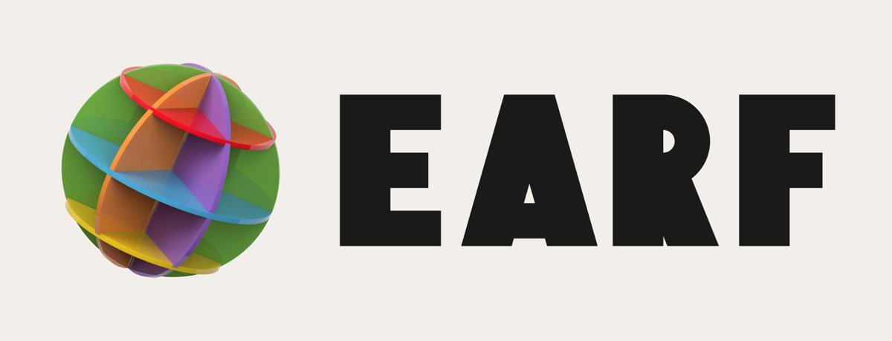</a>
    <nav aria-label="Chapters">
      <a href="#position">Position</a><a href="#names">Names</a><a href="#identity">Identity</a><a href="#colour">Colour</a>
      <a href="#type">Type</a><a href="#images">Images</a><a href="#voice">Voice</a><a href="#applications">Applications</a><a href="#packaging">Packaging</a><a href="#ideas">Ideas</a><a href="#press">Press</a><a href="#launch">Launch</a>
    </nav>
  </div>
</header>

<section class="cover band" id="cover">
  <div class="in">
    <p class="eyebrow">EARF · San Francisco · the brand book, first edition, 31 October 2026</p>
    <h1>Something<br>in the air.<span>The EARF brand book.</span></h1>
    <div class="meta">
      <p class="lede">Hi-fi and light, cast in tinted acrylic, in eight colours from Ember to Smoke. This book is how EARF looks, sounds and arrives, so that everything made under the name feels like it came out of one room.</p>
    </div>
    <div class="spectrum" aria-label="The eight tints, Ember to Smoke">
      <div class="slab" style="--t:#C92118"><span>01<br>Ember</span></div>
      <div class="slab" style="--t:#E06718"><span>02<br>Dust</span></div>
      <div class="slab" style="--t:#E2AA15"><span>03<br>Acid</span></div>
      <div class="slab" style="--t:#367424"><span>04<br>Poison</span></div>
      <div class="slab" style="--t:#2584BE"><span>05<br>Ice</span></div>
      <div class="slab" style="--t:#5B3197"><span>06<br>Haze</span></div>
      <div class="slab light" style="--t:#D5DFE0"><span>07<br>Fog</span></div>
      <div class="slab" style="--t:#57545F"><span>08<br>Smoke</span></div>
    </div>
  </div>
  <div class="in hero full"><figure>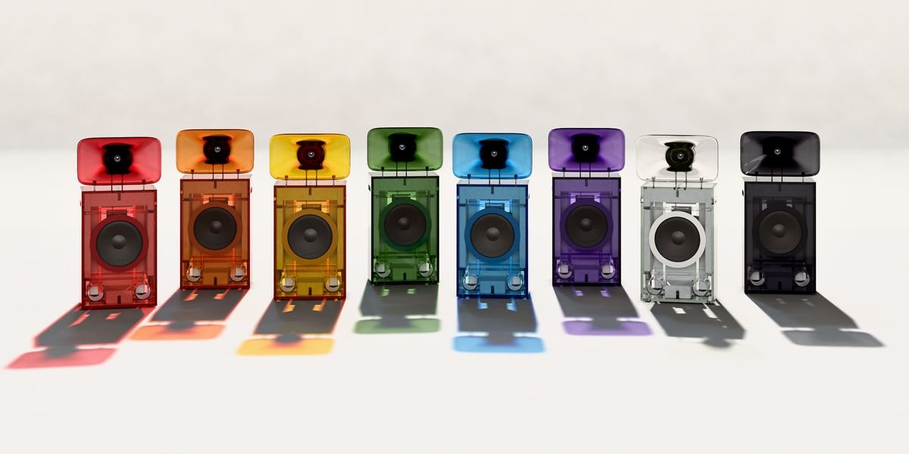<figcaption>Tropos, the eight. <span class="render">Render</span></figcaption></figure></div>
</section>

<section class="chap band" id="position">
  <div class="in">
    <div class="head"><p class="no">01 · Position</p><h2>One material, cast in colour, made to be heard and lit.</h2></div>
    <div class="cols">
      <div><h3>What EARF is</h3><p>A San Francisco maker of hi-fi and lighting in cast acrylic, tinted all the way through. Tropos, a powered horn loudspeaker, leads. Hemisphere and Core light the room in the same acrylic, and Mantle plays the records. Every piece comes in the same eight tints, so a room can be one colour or three.</p></div>
      <div><h3>For whom</h3><p>People who arrange a room around listening and want the system to be the best-looking thing in it. Bars, hotels and restaurants that treat sound as part of the design, and need the room to look as good as it sounds. Collectors of design who would buy a speaker as an object first and discover it is a serious one.</p></div>
      <div><h3>Why now</h3><p>Listening bars have spread from Tokyo to most large cities, and the habit has followed people home. Records came back to the living room. Interiors came back to colour. And most high-end audio still arrives as a black box or a wood veneer. EARF answers all four at once: colour you can see through, a horn you can see into, light through the same material.</p></div>
    </div>
    <div class="two">
      <figure>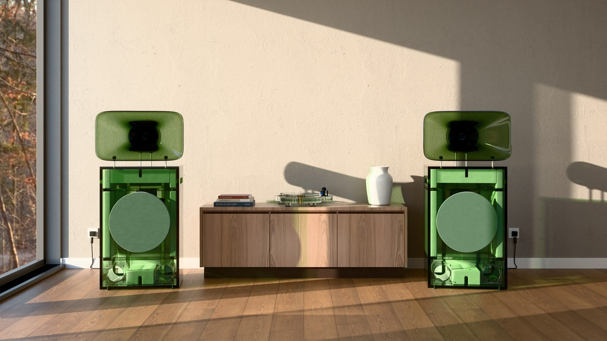<figcaption><b>At home.</b> A pair in Poison. <span class="render">Render</span></figcaption></figure>
      <figure>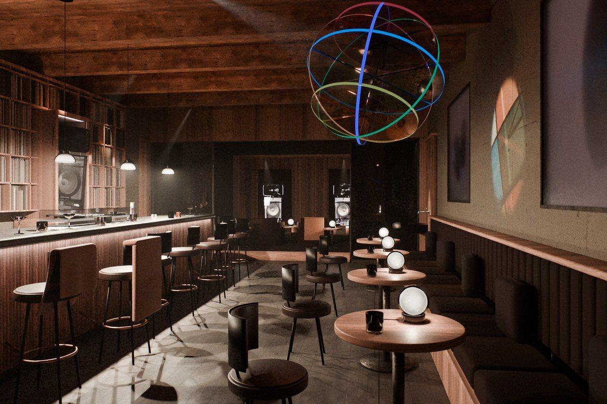<figcaption><b>At Planet EARF.</b> The listening bar where everything in the room is for sale. <span class="render">Render</span></figcaption></figure>
    </div>
    <div class="prose">
      <p class="eyebrow">What the brand holds to</p>
      <p><b>The material is the message.</b> Twenty millimetres of acrylic, coloured through, carries light to its edges and shows what is inside. Nothing is painted on and nothing is hidden behind a veneer: the lining, the horn's driver, the amplifier's plate all show through the wall, so they are made to be seen.</p>
      <p><b>Colour is a system, not a range.</b> The eight tints are the same eight in every product and every application, always in the same order, always numbered. A customer chooses a colour once and the whole catalogue follows.</p>
      <p><b>Engineering first, then the joke.</b> The horn's profile and the cabinet's bass were simulated before any acrylic was cut, and the particulars are published to the millimetre. The wit lives in the names and the lines, never in the figures.</p>
    </div>
  </div>
</section>

<section class="chap band paper" id="names">
  <div class="in">
    <div class="head"><p class="no">02 · The naming system</p><h2>Every product is a layer of the Earth.</h2>
      <p class="lede">The company is the planet. Each product takes the name of one of its layers, chosen for what the product does in a room, and the tints take the names of what drifts through the air above it.</p></div>
    <div class="strata">
      <div class="stratum"><h3>Tropos</h3><p class="what">Powered horn loudspeaker · the flagship</p><p class="why">From the troposphere, the layer of air we live in, named for the Greek <i>tropos</i>, a turn. The speaker fills the air of a room. Chosen on 29 October 2026 after Atmosphere was found taken in audio; a lawyer's search confirms before filing.</p></div>
      <div class="stratum"><h3>Hemisphere</h3><p class="what">Pendant lamp</p><p class="why">Half a globe, hung mouth down. A quarter turn takes its shade off and another puts a new colour on.</p></div>
      <div class="stratum"><h3>Core</h3><p class="what">Cordless table lamp</p><p class="why">The glowing centre. A ball of tinted acrylic sitting low in a black base, plugged in or not.</p></div>
      <div class="stratum"><h3>Mantle</h3><p class="what">Record player</p><p class="why">The layer that moves under the crust. Its tinted plinth floats 40 mm over a base lit at its edge.</p></div>
      <div class="stratum"><h3>Planet EARF</h3><p class="what">The listening bar, San Francisco · planned</p><p class="why">The whole world in one room: every object in it is for sale, and every one of them swaps tint.</p></div>
      <div class="stratum"><h3>Mother EARF</h3><p class="what">The globe · a brand object</p><p class="why">The mark made real: six slotted discs of cast acrylic, each in its own tint, 1.25 m across, hung over the bar's banquette. Its Sunday afternoon session shares the name.</p></div>
      <div class="stratum reserve"><h3>Crust · Strata · Ozone</h3><p class="what">Held for later · proposals</p><p class="why">Names kept in reserve for a stand, a rack and an air-moving product, if they come. Each needs the owner's yes and a trademark search first.</p></div>
    </div>
    <ul class="rules">
      <li><b>The company</b><span>Always EARF, in capitals, as one word. The place is Planet EARF; the globe is Mother EARF; the site is earf.world.</span></li>
      <li><b>A product</b><span>One word, a layer or a region of the Earth, a capital letter and nothing more. No model numbers in speech.</span></li>
      <li><b>A tint</b><span>Number and name, in spectrum order: 01 Ember, 02 Dust, 03 Acid, 04 Poison, 05 Ice, 06 Haze, 07 Fog, 08 Smoke. A product in a tint is "Tropos 04", or "Tropos in Poison".</span></li>
      <li><b>A model code</b><span>On the plate and the paperwork only: T for Tropos. Codes for the lamps and Mantle follow the same pattern when they are certified.</span></li>
    </ul>
  </div>
</section>

<section class="chap band" id="identity">
  <div class="in">
    <div class="head"><p class="no">03 · Identity</p><h2>The acrylic globe, and the name beside it.</h2>
      <p class="lede">Three meridian discs and three parallel rings, slotted together like the bar's Mother EARF, each in a tint that mixes where it crosses. The wordmark is cut from the same circles and squares, its R a circle on a stem.</p></div>
    <div class="two">
      <div class="plate p"></div>
      <div class="plate n">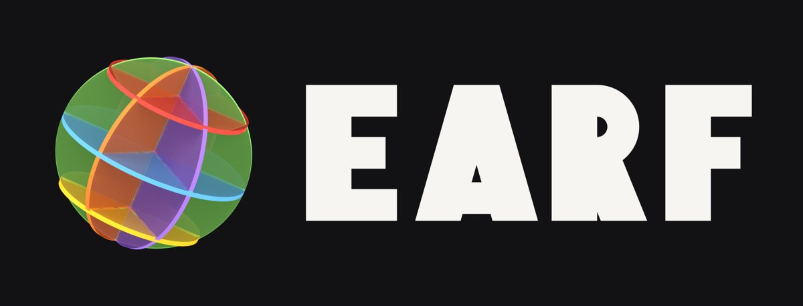</div>
    </div>
    <div class="four">
      <figure><div class="plate p">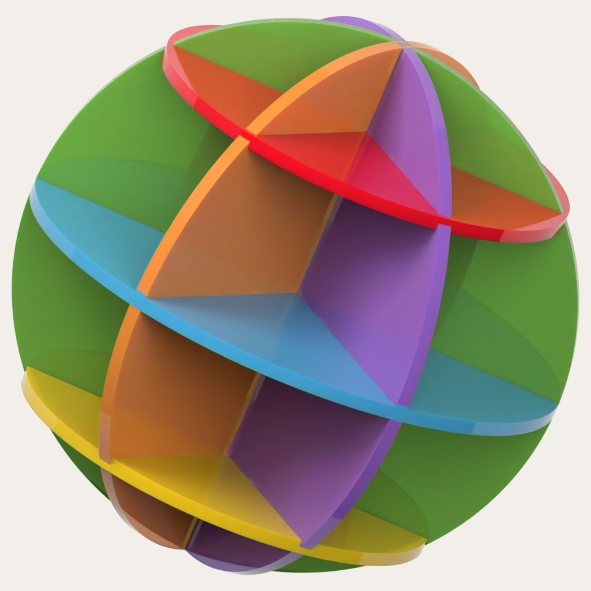</div><figcaption><b>The globe, rendered.</b> The mark itself: on the site's header, turning, and on anything printed in colour.</figcaption></figure>
      <figure><div class="plate p">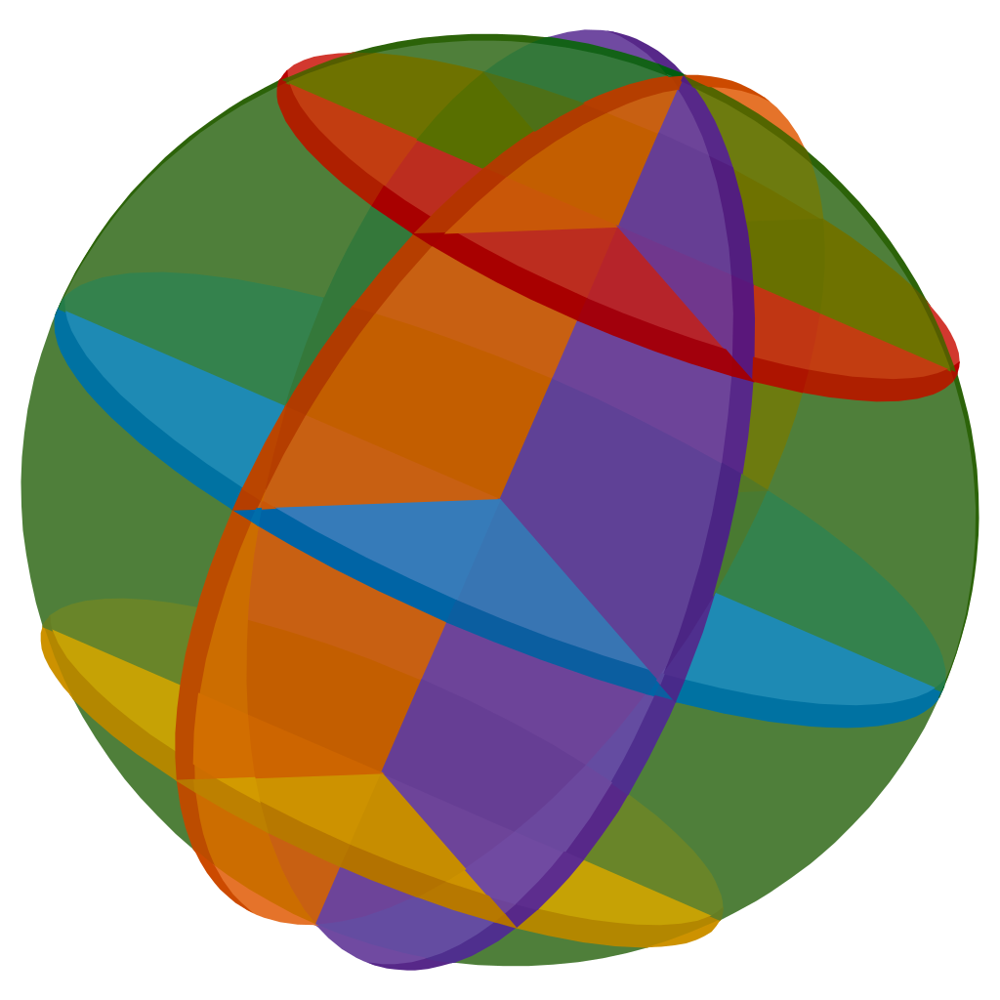</div><figcaption><b>Drawn flat.</b> For print where a render will not hold: screen printing, embroidery, small sizes in colour.</figcaption></figure>
      <figure><div class="plate p">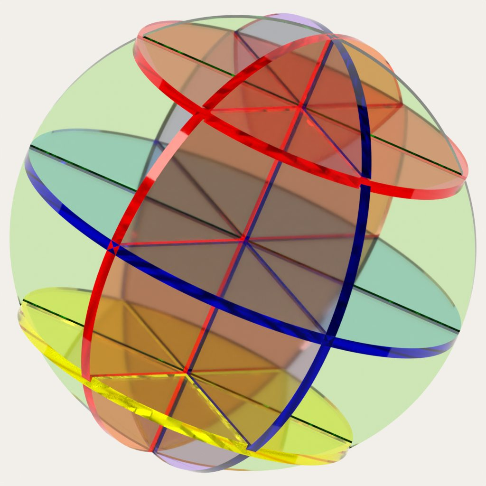<!-- the object --></div><figcaption><b>As an object.</b> The six discs cut and slotted. Mother EARF at 1.25 m, the coin's face at 40 mm.</figcaption></figure>
      <figure><div class="plate k">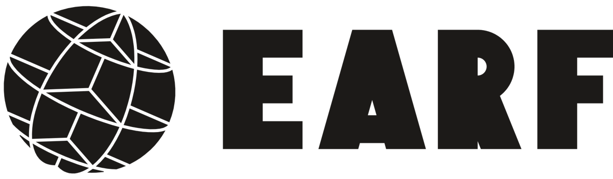</div><figcaption><b>One colour.</b> Black, white, or any one tint. For etching, engraving, the rating plate and the door.</figcaption></figure>
    </div>
    <ul class="rules">
      <li><b>The lockup</b><span>The globe left, 1.5 cap heights across, the wordmark right. The pair never separates except where the globe stands alone (an icon, a coin, the door) or the wordmark does (a plate, a label, a social post's corner).</span></li>
      <li><b>Clear space</b><span>The height of the E's middle arm on every side, at least. Nothing else enters it, not even another EARF.</span></li>
      <li><b>Small sizes</b><span>Below 64 px the globe is drawn again, not scaled: separate files at 64, 32 and 16 px keep its lines open (brand/mark/small).</span></li>
      <li><b>On a picture</b><span>The wordmark alone, black or white, small, in a corner, never over the product. The colour globe goes on paper or night, never on a photograph.</span></li>
      <li><b>Never</b><span>Recolour the globe's discs, outline the wordmark, set it in another face, stretch it, add a shadow or a glow it doesn't have, or put the tints in a gradient.</span></li>
      <li><b>Files</b><span>spinoffs/barkhorn/brand/mark (SVG and PNG in every colourway), brand/real (the object), brand/mark/small.</span></li>
    </ul>
    <div class="three motion">
      <figure><video src="img/globe-turn.mp4" autoplay muted loop playsinline aria-label="The acrylic globe turning, as in the site's header"></video><figcaption><b>The turn.</b> The globe turning on its axis, as it does in the site's header; the only motion the mark makes at rest.</figcaption></figure>
      <figure><video src="img/ident-coin.mp4" autoplay muted loop playsinline aria-label="The coin ident: a coin spins and lands showing the globe"></video><figcaption><b>The coin.</b> An ident: a coin spins, wobbles and lands face up on the globe. Parked since round 27, kept for a launch film and EARFcoin.</figcaption></figure>
      <figure><video src="img/ident-rise.mp4" autoplay muted loop playsinline aria-label="The rise ident: the globe rises over a dark horizon"></video><figcaption><b>Earthrise.</b> An ident on night: the globe rises over its own horizon. Parked, for the bar's screens and the end of a film.</figcaption></figure>
    </div>
    <div class="two">
      <div class="clear"><div class="box"></div></div>
      <div class="prose" style="align-content:center"><p class="eyebrow">The wordmark in the tints</p><p>For the rare moment when the name itself should carry the colour: the opening of a launch film, the spine of a box set, a wall at the bar. Each letter takes one tint, as cut sheets laid over each other would. Used once per surface, never beside the colour globe.</p></div>
    </div>
  </div>
</section>

<section class="chap band paper" id="colour">
  <div class="in">
    <div class="head"><p class="no">04 · Colour</p><h2>Eight tints, cast all the way through.</h2>
      <p class="lede">The colour is in the acrylic, not on it. Each tint has a name, a number, a line and three values: the mark's flat colour, the colour the acrylic renders as in light, and the cover cloth that goes with it.</p></div>
    <div class="tints">
      <div class="tint" style="--t:#C92118"><div class="pic">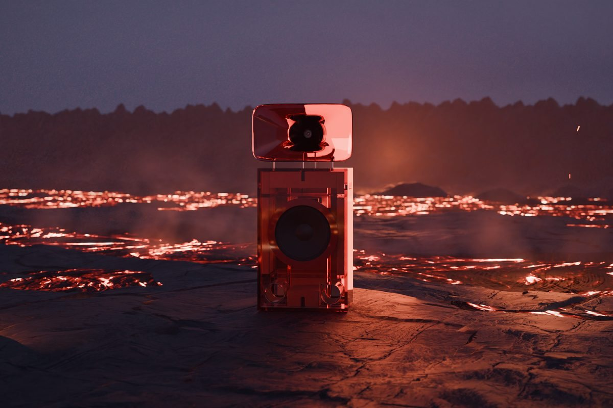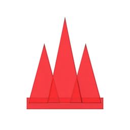</div><h3>Ember <small>01</small></h3><p class="line">The last light of the fire.</p>
        <dl><dt>Acrylic</dt><dd>Translucent red</dd><dt>Mark</dt><dd><i style="background:#D2382F"></i><code>#D2382F</code></dd><dt>In light</dt><dd><i style="background:#C92118"></i><code>#C92118</code></dd><dt>Cover</dt><dd>Oxblood</dd></dl></div>
      <div class="tint" style="--t:#E06718"><div class="pic">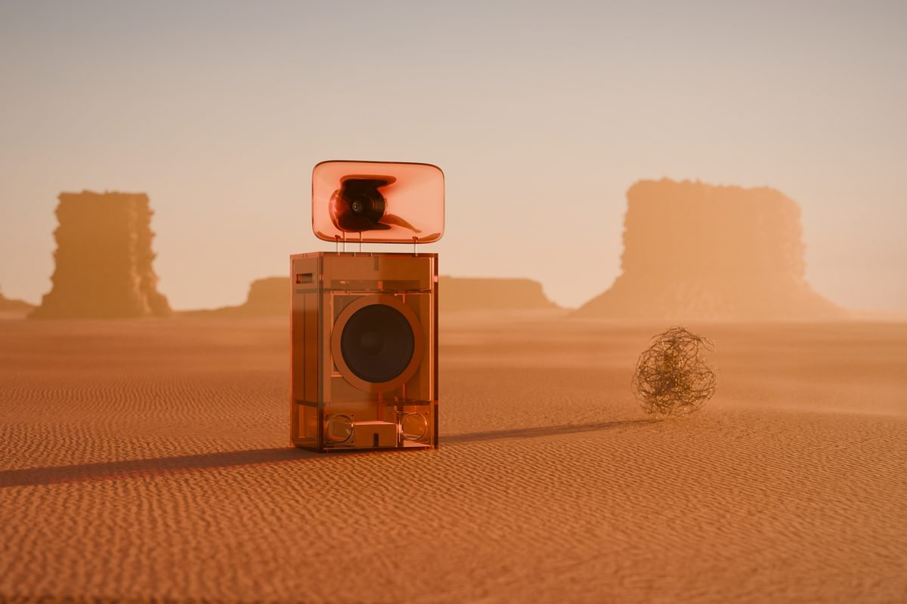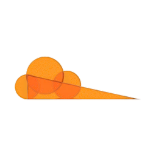</div><h3>Dust <small>02</small></h3><p class="line">A long, dry afternoon.</p>
        <dl><dt>Acrylic</dt><dd>Translucent orange</dd><dt>Mark</dt><dd><i style="background:#E5732A"></i><code>#E5732A</code></dd><dt>In light</dt><dd><i style="background:#E06718"></i><code>#E06718</code></dd><dt>Cover</dt><dd>Rust</dd></dl></div>
      <div class="tint" style="--t:#E2AA15"><div class="pic">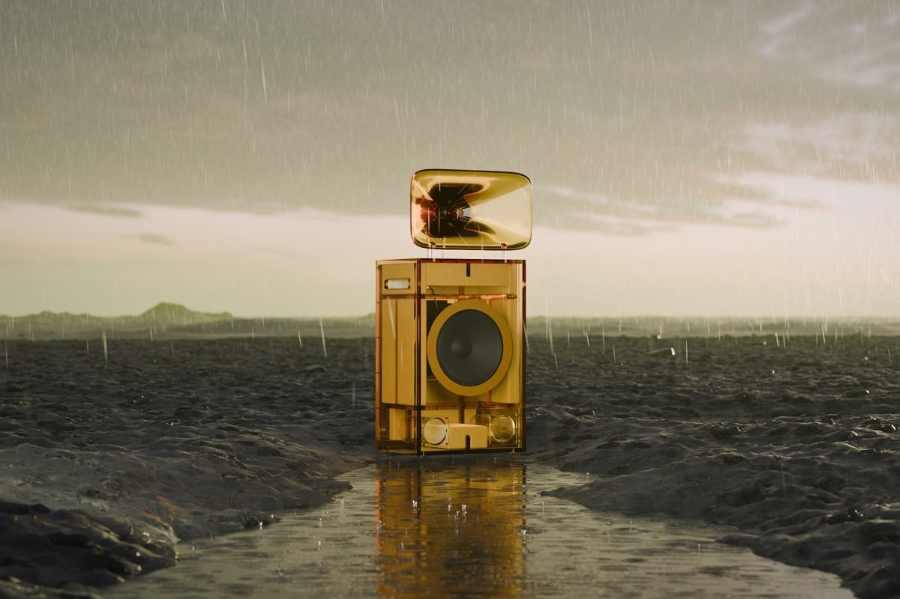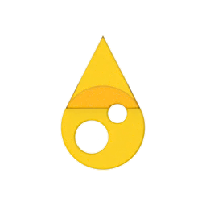</div><h3>Acid <small>03</small></h3><p class="line">A yellow with an edge.</p>
        <dl><dt>Acrylic</dt><dd>Translucent golden yellow</dd><dt>Mark</dt><dd><i style="background:#E9B320"></i><code>#E9B320</code></dd><dt>In light</dt><dd><i style="background:#E2AA15"></i><code>#E2AA15</code></dd><dt>Cover</dt><dd>Ochre</dd></dl></div>
      <div class="tint" style="--t:#367424"><div class="pic">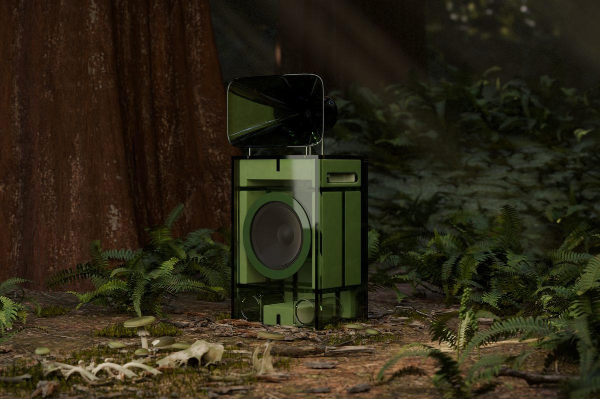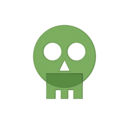</div><h3>Poison <small>04</small></h3><p class="line">Bottle green. Keep out of reach.</p>
        <dl><dt>Acrylic</dt><dd>Translucent bottle green</dd><dt>Mark</dt><dd><i style="background:#4F7F3A"></i><code>#4F7F3A</code></dd><dt>In light</dt><dd><i style="background:#367424"></i><code>#367424</code></dd><dt>Cover</dt><dd>Bottle green</dd></dl></div>
      <div class="tint" style="--t:#2584BE"><div class="pic">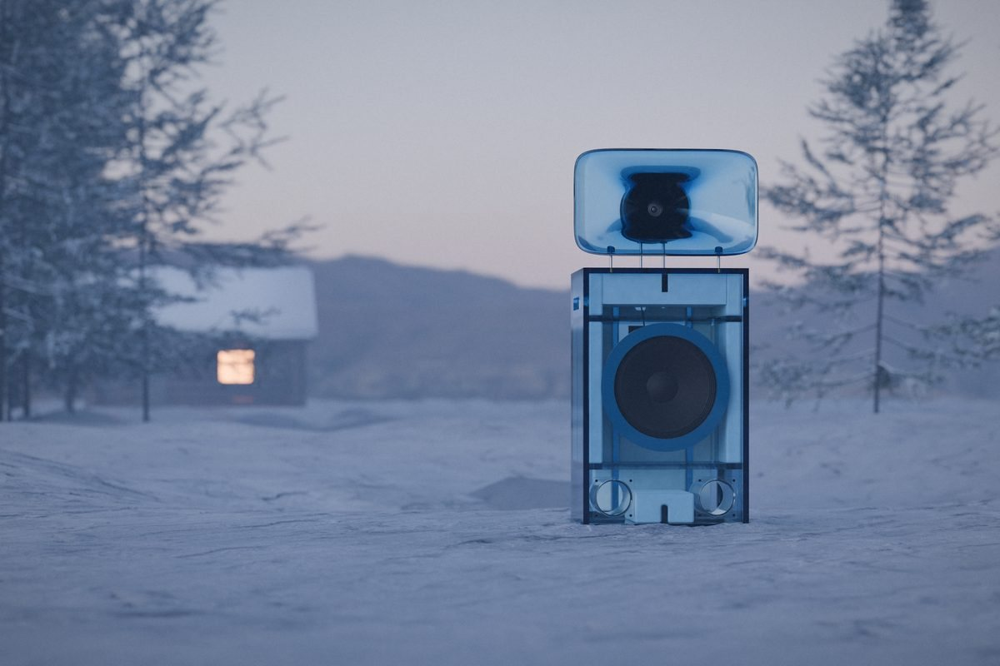</div><h3>Ice <small>05</small></h3><p class="line">Glacier blue, and in no hurry.</p>
        <dl><dt>Acrylic</dt><dd>Translucent ice blue</dd><dt>Mark</dt><dd><i style="background:#4A90C8"></i><code>#4A90C8</code></dd><dt>In light</dt><dd><i style="background:#2584BE"></i><code>#2584BE</code></dd><dt>Cover</dt><dd>Deep blue</dd></dl></div>
      <div class="tint" style="--t:#5B3197"><div class="pic">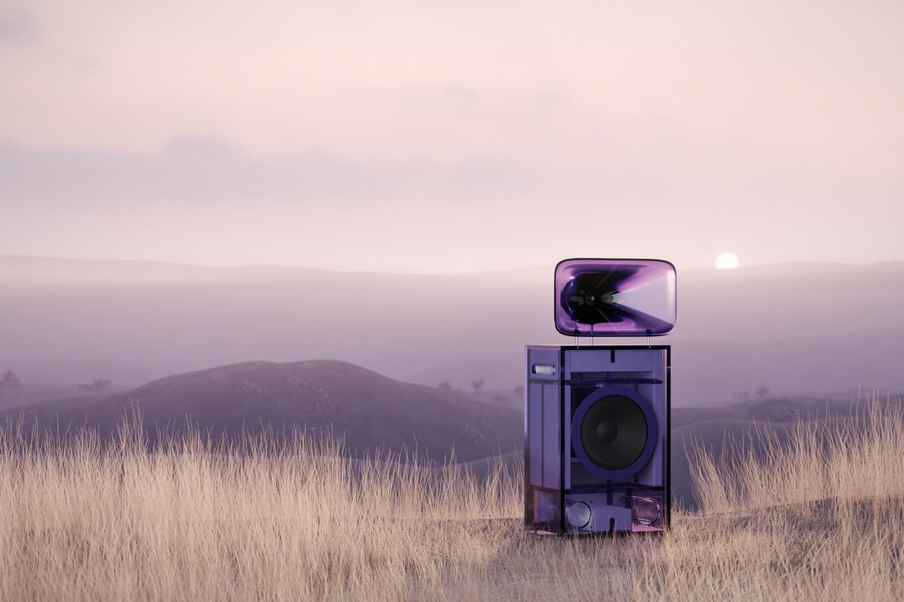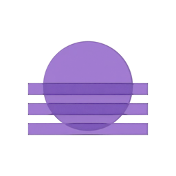</div><h3>Haze <small>06</small></h3><p class="line">Dusk, kept indoors.</p>
        <dl><dt>Acrylic</dt><dd>Translucent violet</dd><dt>Mark</dt><dd><i style="background:#6C4BA3"></i><code>#6C4BA3</code></dd><dt>In light</dt><dd><i style="background:#5B3197"></i><code>#5B3197</code></dd><dt>Cover</dt><dd>Deep violet</dd></dl></div>
      <div class="tint" style="--t:#D5DFE0"><div class="pic">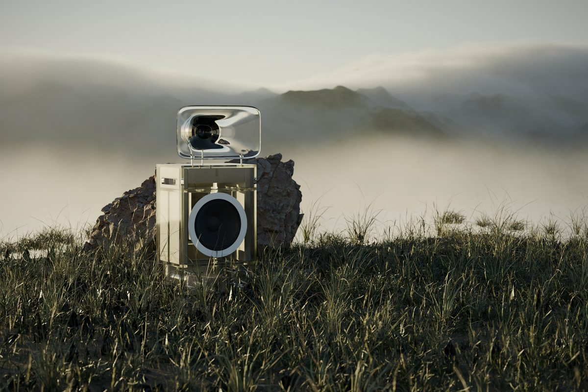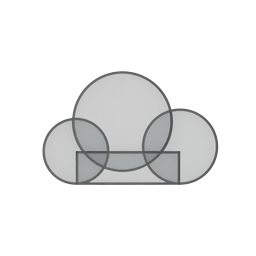</div><h3>Fog <small>07</small></h3><p class="line">Water-clear. Almost not there.</p>
        <dl><dt>Acrylic</dt><dd>Water-clear</dd><dt>Mark</dt><dd><i style="background:#F6F8F8"></i><code>#F6F8F8</code></dd><dt>In light</dt><dd><i style="background:#D5DFE0"></i><code>#D5DFE0</code></dd><dt>Cover</dt><dd>White</dd></dl></div>
      <div class="tint" style="--t:#57545F"><div class="pic">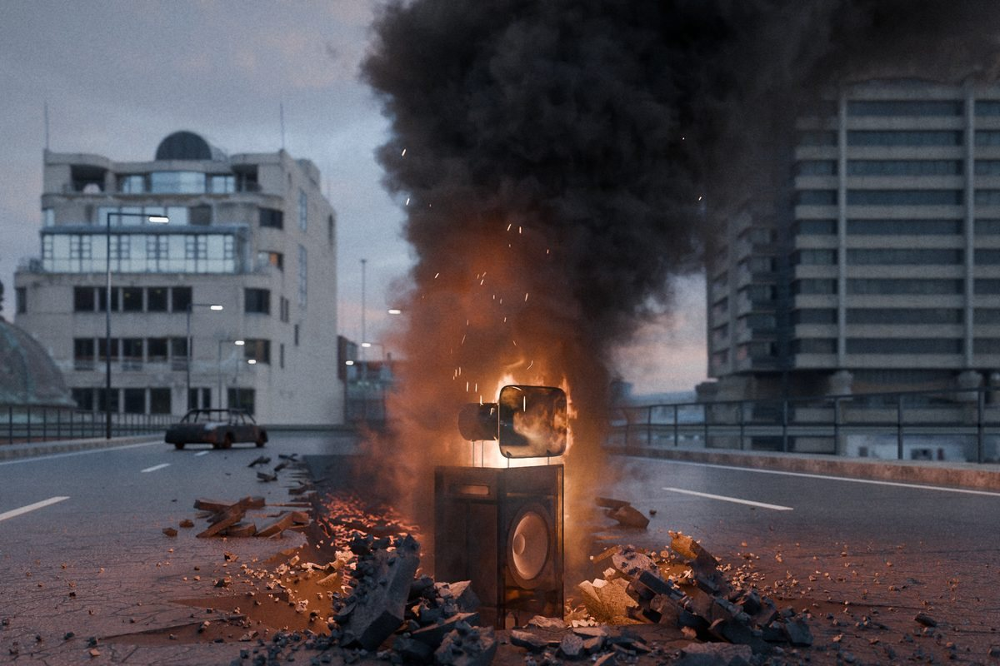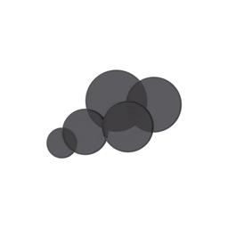</div><h3>Smoke <small>08</small></h3><p class="line">Smoked glass, for after dark.</p>
        <dl><dt>Acrylic</dt><dd>Smoked black</dd><dt>Mark</dt><dd><i style="background:#34323A"></i><code>#34323A</code></dd><dt>In light</dt><dd><i style="background:#57545F"></i><code>#57545F</code></dd><dt>Cover</dt><dd>Black</dd></dl></div>
    </div>
    <div class="prose"><p class="muted" style="font-size:15px">"Mark" is the flat colour the marks and icons use (marks.py). "In light" is sampled from the rendered acrylic coins on earf.world, the closest thing to the cast colour until the stock sheets are matched; the cast references (the makers' colour codes and dye lots) are being chosen with the suppliers and will be added here. The horn is cast in a heavier dye lot so it reads as deep as its cabinet.</p></div>
    <div class="head" style="margin-top:12px"><p class="eyebrow">The neutrals</p><p class="lede">Paper and ink carry everything else, so the tints are always the loudest thing on the page. Night is for the bar and for the glow.</p></div>
    <div class="neutrals">
      <div class="neutral"><div class="sw" style="--c:#F4F1EC"></div><b>Page</b><span>#F4F1EC</span></div>
      <div class="neutral"><div class="sw" style="--c:#ECE8E1"></div><b>Paper</b><span>#ECE8E1</span></div>
      <div class="neutral"><div class="sw" style="--c:#D6D0C6"></div><b>Rule</b><span>#D6D0C6</span></div>
      <div class="neutral"><div class="sw" style="--c:#5E5A53"></div><b>Muted</b><span>#5E5A53</span></div>
      <div class="neutral"><div class="sw" style="--c:#1C1A18"></div><b>Ink</b><span>#1C1A18</span></div>
      <div class="neutral"><div class="sw" style="--c:#100F12"></div><b>Night</b><span>#100F12</span></div>
    </div>
    <ul class="rules">
      <li><b>Order</b><span>Always the spectrum: Ember, Dust, Acid, Poison, Ice, Haze, Fog, Smoke. Never alphabetical, never by popularity.</span></li>
      <li><b>One at a time</b><span>A surface carries one tint, or all eight in order. Never two or three picked for a mood.</span></li>
      <li><b>Pairs on the site</b><span>Where two are shown together, they pair by the painter's wheel, as earf.world's colour pages do: Fog with the cool tints, Smoke with the deep ones.</span></li>
      <li><b>No gradients</b><span>The tints never blend into one another on a printed or digital surface. Where they meet, they overlap, as sheets do.</span></li>
    </ul>
  </div>
</section>

<section class="chap band" id="type">
  <div class="in">
    <div class="head"><p class="no">05 · Type</p><h2>A grotesque with a little warmth, and a typewriter for the facts.</h2>
      <p class="lede">The site's two faces, both free and open: Instrument Sans for everything that speaks, IBM Plex Mono for everything that measures.</p></div>
    <div class="specimen">
      <div><div class="aa">Aa</div><p class="muted" style="margin-top:14px">Instrument Sans · 400 to 700 · headlines at 600, tight; text at 400</p></div>
      <div><div class="mo">20 mm</div><p class="muted" style="margin-top:14px">IBM Plex Mono · 400 and 500 · labels, numbers, eyebrows, particulars; capitals with a little tracking</p></div>
    </div>
    <div class="scale">
      <div><span class="k">Display · 600 · −4.5%</span><span style="font-size:clamp(40px,6vw,72px);font-weight:600;letter-spacing:-.045em;line-height:1">Something in the air.</span></div>
      <div><span class="k">Headline · 600 · −3%</span><span style="font-size:clamp(28px,3.4vw,40px);font-weight:600;letter-spacing:-.03em;line-height:1.05">The oldest amplifier is a shape.</span></div>
      <div><span class="k">Lede · 400</span><span style="font-size:21px;line-height:1.45">Cast acrylic carries light to its edges, so a lamp underneath fills the whole cabinet with colour.</span></div>
      <div><span class="k">Text · 400 · 17/1.6</span><span>Each cabinet is cast acrylic, 20 mm thick and tinted all the way through. The lining shows through the walls, so we dressed it in white voile.</span></div>
      <div><span class="k">Label · Mono 500 · +12%</span><span class="mono" style="font-size:12.5px;letter-spacing:.14em;text-transform:uppercase">Tropos 04 · Poison · 1293 mm</span></div>
    </div>
    <ul class="rules">
      <li><b>Sentence case</b><span>Headlines in sentence case with a full stop. Capitals only in the mono labels and on hardware.</span></li>
      <li><b>Spelling</b><span>British, as the site has it: colour, aluminium, metre. Units in millimetres with a space, 20 mm; figures that are designed, not measured, say "about".</span></li>
      <li><b>On hardware</b><span>Plex Mono for every engraved or laser-marked word; the wordmark for the name. Nothing else.</span></li>
      <li><b>Fallbacks</b><span>Helvetica Neue, then Arial; Courier New for the mono. Never Inter, never a serif.</span></li>
    </ul>
  </div>
</section>

<section class="chap band paper" id="images">
  <div class="in">
    <div class="head"><p class="no">06 · Image direction</p><h2>Light through the material is the subject.</h2>
      <p class="lede">Five kinds of picture, each with one job. Until the first pieces are built, every one is a render and says so; the same rules carry over to the photographs.</p></div>
    <div class="full"><figure>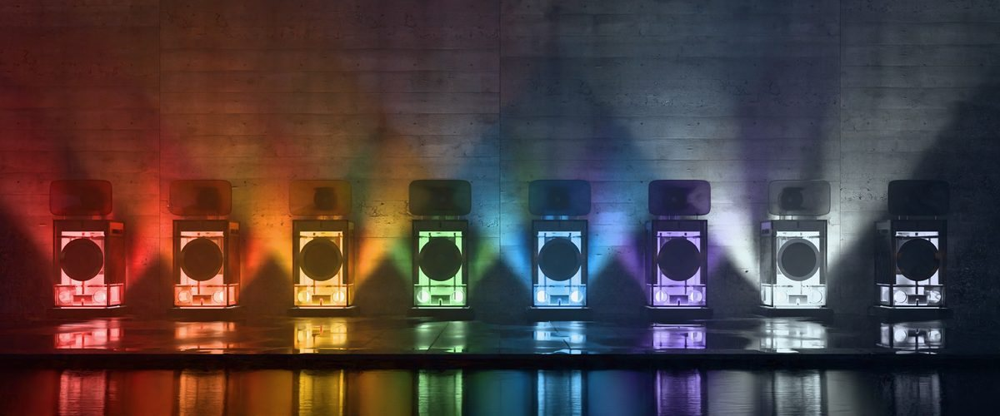<figcaption><b>Lit from below.</b> A lamp under each cabinet, the colour thrown up a concrete wall. The picture only EARF can make. <span class="render">Render</span></figcaption></figure></div>
    <div class="three">
      <figure>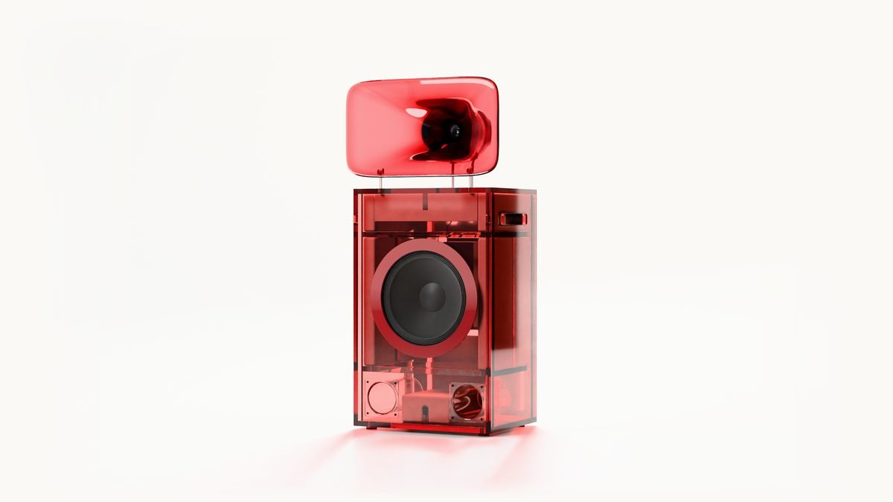<figcaption><b>The studio.</b> One product, a pale seamless, a soft key: the product page and the press. No props.</figcaption></figure>
      <figure><figcaption><b>In its element.</b> Each tint where it began: real places, real texture, the speaker set into the ground, never floating over it.</figcaption></figure>
      <figure>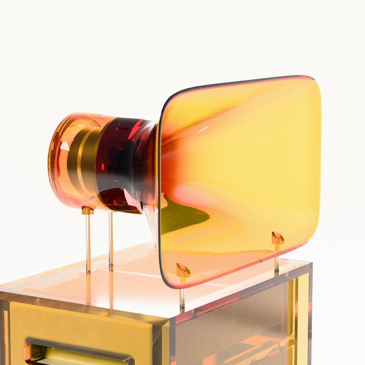<figcaption><b>Up close.</b> The cut edge, the cemented corner, the horn's flare: where the light gathers.</figcaption></figure>
      <figure><figcaption><b>At home.</b> A real room, daylight, the pair placed as an owner would place them.</figcaption></figure>
      <figure>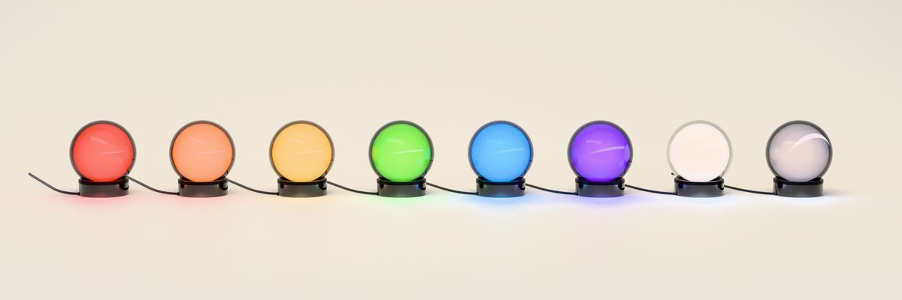<figcaption><b>The eight.</b> The whole spectrum in order, one product at a time.</figcaption></figure>
      <figure>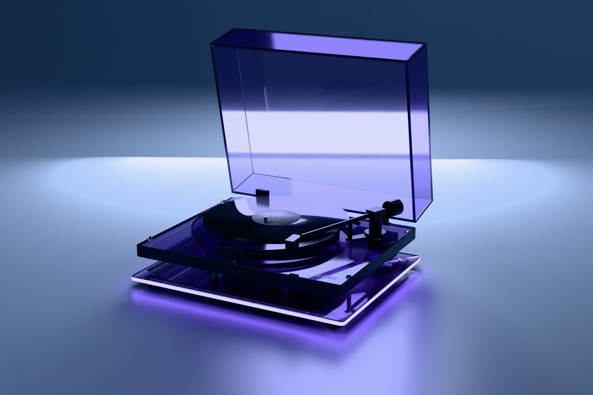<figcaption><b>After dark.</b> The product as the light in the room.</figcaption></figure>
    </div>
    <ul class="rules">
      <li><b>Always</b><span>Light passing through the acrylic. A coloured shadow somewhere in the frame. The product's real proportions, from the drawings. A label, "Render", until it is a photograph.</span></li>
      <li><b>Never</b><span>Tilt-shift or dioramas. A setting that cannot look real (the owner stopped the Golden Gate for this). A product floating over its ground. Props that compete with it. Flare, haze or glow added after the fact.</span></li>
      <li><b>Crops</b><span>3:2 on the site, 4:5 on phones and posts, 1:1 for the icons. The product never touches the frame's edge, except up close.</span></li>
      <li><b>Files</b><span>The finals are in site/img (from finals.py); the bar's in renders/…/planet*/finals on the bar's branch.</span></li>
    </ul>
  </div>
</section>

<section class="chap band night" id="voice">
  <div class="in">
    <div class="head"><p class="no" style="color:var(--night-muted)">07 · Voice</p><h2>Cheeky, but reserved.</h2>
      <p class="lede" style="color:var(--night-muted)">The owner's brief: sophisticated, witty, never pleased with itself. Say what the thing is and what it does. Let one line per surface smile; let the rest be exact.</p></div>
    <div class="lines">
      <div><q>Something in the air.</q><span>The headline</span></div>
      <div><q>Eight things in the air.</q><span>Tropos, the eight</span></div>
      <div><q>The oldest amplifier is a shape.</q><span>The horn</span></div>
      <div><q>Put a light under it.</q><span>Lit from below</span></div>
      <div><q>Plugged in or not.</q><span>Core</span></div>
      <div><q>A record player that floats on its own light.</q><span>Mantle</span></div>
      <div><q>Bottle green. Keep out of reach.</q><span>04 Poison</span></div>
      <div><q>Drawn to be made.</q><span>Progress</span></div>
    </div>
    <div class="cols">
      <div><h3>Exact</h3><p style="color:var(--night-muted)">Millimetres, kilograms, hertz. "About" when a figure is designed and not yet measured. Never a superlative a measurement hasn't earned.</p></div>
      <div><h3>Dry</h3><p style="color:var(--night-muted)">The wit is in the names, the tints' lines and one turn of phrase per surface. No exclamation marks, no puns on "sound", no winking at the reader.</p></div>
      <div><h3>Plain about the unfinished</h3><p style="color:var(--night-muted)">"In development, not yet for sale." "Every picture here is a render." A brand at this stage earns trust by saying what isn't done.</p></div>
    </div>
    <div class="dodont">
      <div class="hdrow"><span class="hd">Not this</span><span class="hd">This</span><span class="hd">Because</span></div>
      <div><s>Eight horned speakers in coloured acrylic.</s><span>Eight things in the air.</span><span class="why">Never state what the picture already shows.</span></div>
      <div><s>Watch the horns turn as you scroll.</s><span>(Say nothing. Let it turn.)</span><span class="why">The words are about the product, never the website.</span></div>
      <div><s>Choose your weather.</s><span>Each colour, where it began.</span><span class="why">Smoke and Poison aren't weather. Don't force a metaphor past where it fits.</span></div>
      <div><s>Sustainably crafted from eco-conscious materials.</s><span>(Nothing, until it can be shown.)</span><span class="why">The owner, 25 October: a claim we can't yet deliver reads cheap.</span></div>
      <div><s>Price on request — contact us today!</s><span>Everything is made to order, so we quote rather than list.</span><span class="why">State the fact and the reason; never chase.</span></div>
    </div>
  </div>
</section>

<section class="chap band" id="applications">
  <div class="in">
    <div class="head"><p class="no">08 · Applications</p><h2>The same room, wherever the name goes.</h2>
      <p class="lede">Drawn mockups for review. Sizes and stocks are proposals; marks and prices stay placeholders until they are earned and set.</p></div>
    <div class="app"><figure>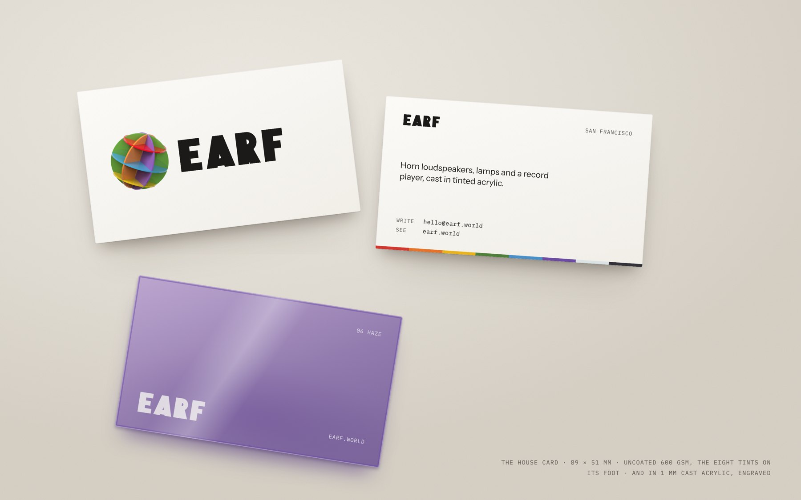</figure>
      <div class="txt"><h3>The house card</h3><p>One card for the company, not a person: the front the lockup, the back one line and the address. The tints run along its foot in order, printed on the edge of the stack, so a box of cards is a spectrum. A second card, cut from 1 mm cast acrylic in any tint and engraved, is for the bar and for the people who ask.</p>
        <dl><dt>Size</dt><dd>89 × 51 mm</dd><dt>Stock</dt><dd>Uncoated 600 gsm, letterpress black; edge painted in eight bands</dd><dt>Acrylic</dt><dd>1 mm cast, laser-cut and engraved, corners 1 mm</dd></dl></div></div>
    <div class="app"><figure>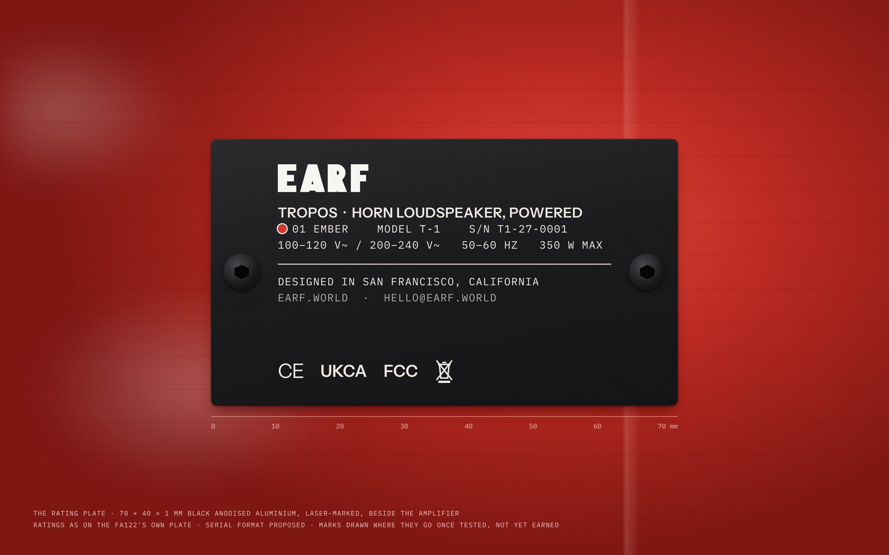</figure>
      <div class="txt"><h3>The rating plate</h3><p>The one place the brand is required by law, so it is the most carefully set. Black anodised aluminium, laser-marked white, two black pan heads, beside the amplifier on the back of every Tropos, in the cabinet's own colour.</p>
        <dl><dt>Size</dt><dd>70 × 40 × 1 mm (the part in product.py)</dd><dt>Type</dt><dd>The wordmark, then Plex Mono</dd><dt>Ratings</dt><dd>As on the FA122's own plate</dd><dt>Marks</dt><dd>Drawn where they go; added only once tested</dd></dl></div></div>
    <div class="app"><figure>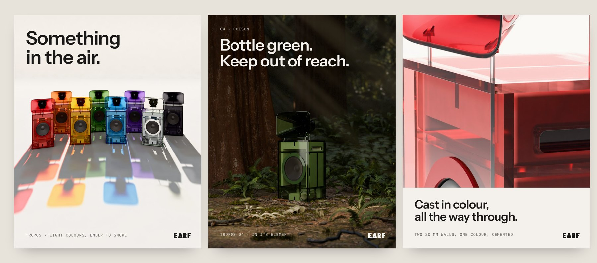</figure>
      <div class="txt"><h3>Social posts</h3><p>One picture, one line, the wordmark small in a corner. The line is always the site's, never a caption written for the feed. Three kinds rotate: the eight, a tint in its element, the material up close.</p>
        <dl><dt>Format</dt><dd>4:5, 1080 × 1350</dd><dt>Line</dt><dd>Instrument Sans 600, top-left or over sky</dd><dt>Label</dt><dd>Plex Mono, the tint's number and name</dd><dt>Never</dt><dd>Stickers, emoji, countdowns</dd></dl></div></div>
    <div class="app"><figure>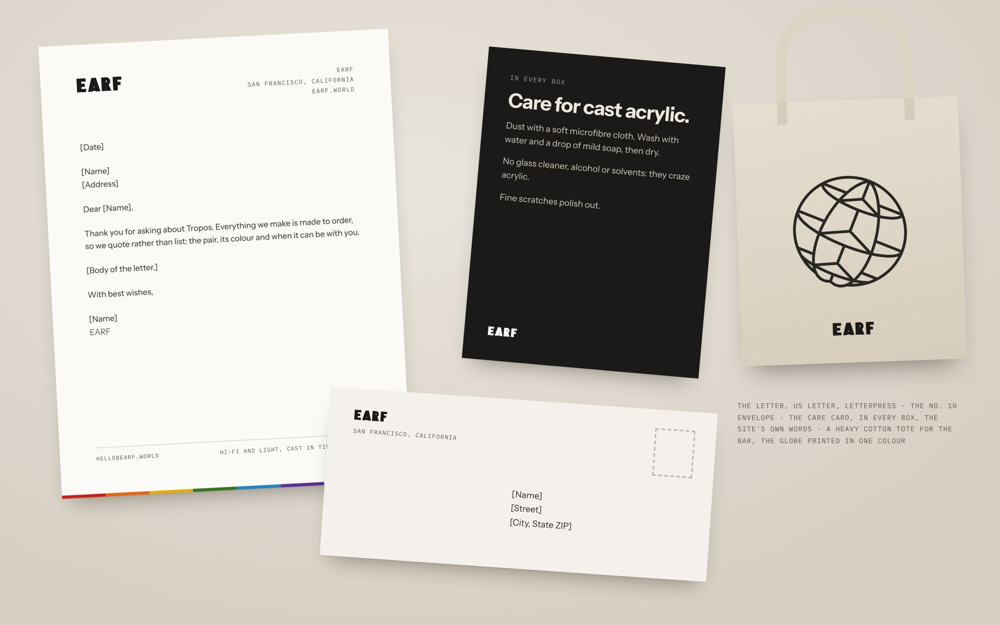</figure>
      <div class="txt"><h3>Paper, and the card in the box</h3><p>The letter says what the site says: made to order, so we quote rather than list. The care card ships in every box in the site's own words, because the one thing that harms acrylic is the wrong cleaner. The tote is the bar's: the globe in one colour on heavy cotton.</p>
        <dl><dt>Letter</dt><dd>US Letter, letterpress, the tints along its foot</dd><dt>Envelope</dt><dd>No. 10, the wordmark and the city only</dd><dt>Care card</dt><dd>Black, white print, 4 × 5.5 in</dd><dt>Tote</dt><dd>Heavy natural cotton, one-colour screen print</dd></dl></div></div>
    <div class="app"><figure>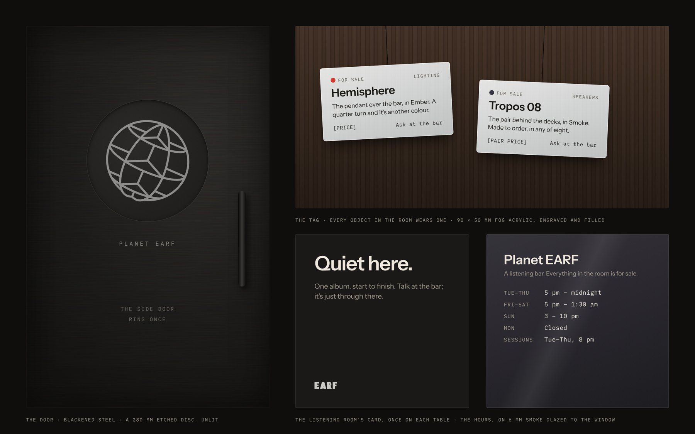</figure>
      <div class="txt"><h3>Planet EARF's signs</h3><p>The bar names itself once, quietly, on a side door. Inside, the brand's busiest application is a tag: everything in the room is for sale, so every object wears one, cut from Fog acrylic and hung on a black thread, its tint marked with a dot.</p>
        <dl><dt>Door</dt><dd>Blackened steel, a 280 mm etched disc, unlit</dd><dt>Tag</dt><dd>90 × 50 mm Fog acrylic, engraved, filled black</dd><dt>Hours</dt><dd>6 mm Smoke, glazed to the window; as in the house book</dd><dt>Prices</dt><dd>[PRICE] and [PAIR PRICE] until set</dd></dl></div></div>
    <div class="app"><figure>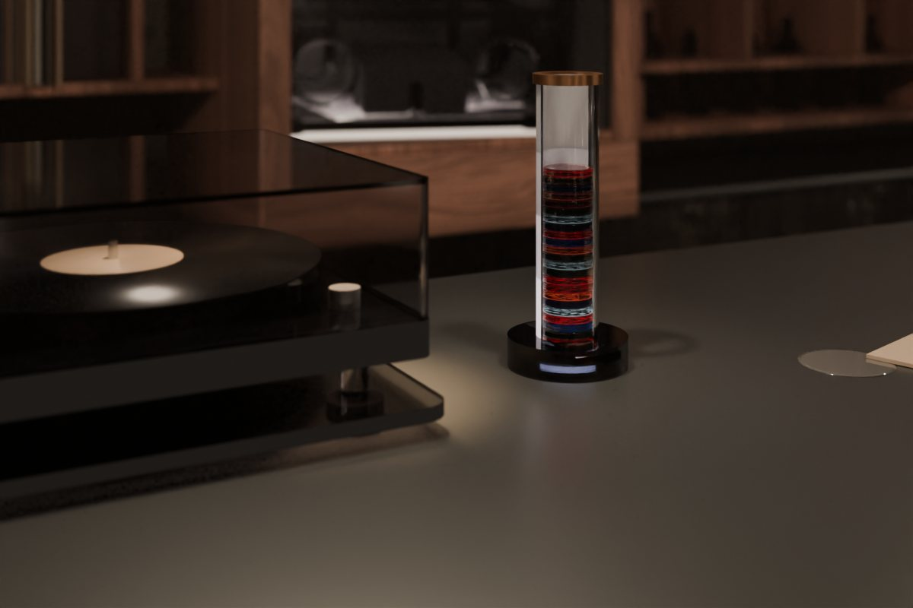</figure>
      <div class="txt"><h3>EARFcoin</h3><p>The brand you can hold. One coin a guest, one song a coin: cast acrylic in the eight tints, 40 mm across, the globe engraved on its back and read through the tint, GOOD FOR ONE SONG round the rim, reeded like money.</p>
        <dl><dt>Size</dt><dd>40 × 6 mm, about 9 g</dd><dt>Made</dt><dd>Laser-cut, edges polished and reeded, engraved and filled</dd><dt>Ritual</dt><dd>A bowl at the door, a clear column at the decks</dd></dl></div></div>
  </div>
</section>

<section class="chap band paper" id="packaging">
  <div class="in">
    <div class="head"><p class="no">09 · Packaging</p><h2>Arrives like an instrument. Opens like a gift.</h2>
      <p class="lede">A 72 kg speaker in polished acrylic is a hard thing to ship and an easy thing to scratch. The crate is built so two people can open it and walk the speaker out without lifting it; the lamps come in boxes made of paper dyed the colour of the shade inside, through and through, as the acrylic is.</p></div>
    <div class="full"><figure>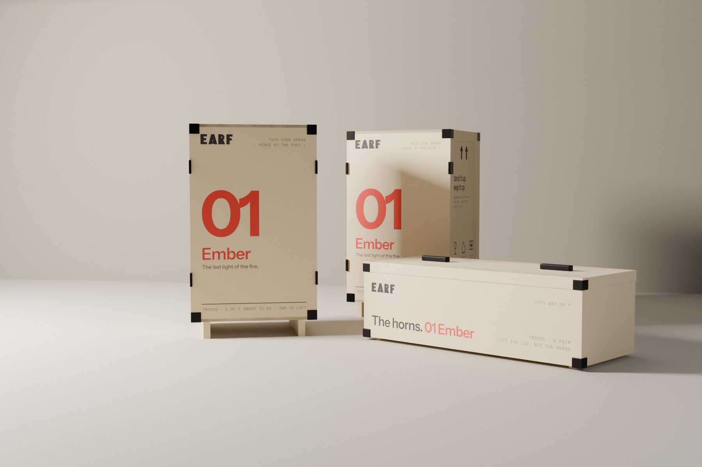<figcaption><b>A pair of Tropos, as it arrives.</b> Two upright crates and one horn case, printed in two inks: black and the tint. <span class="render">Render</span></figcaption></figure></div>
    <div class="two">
      <figure>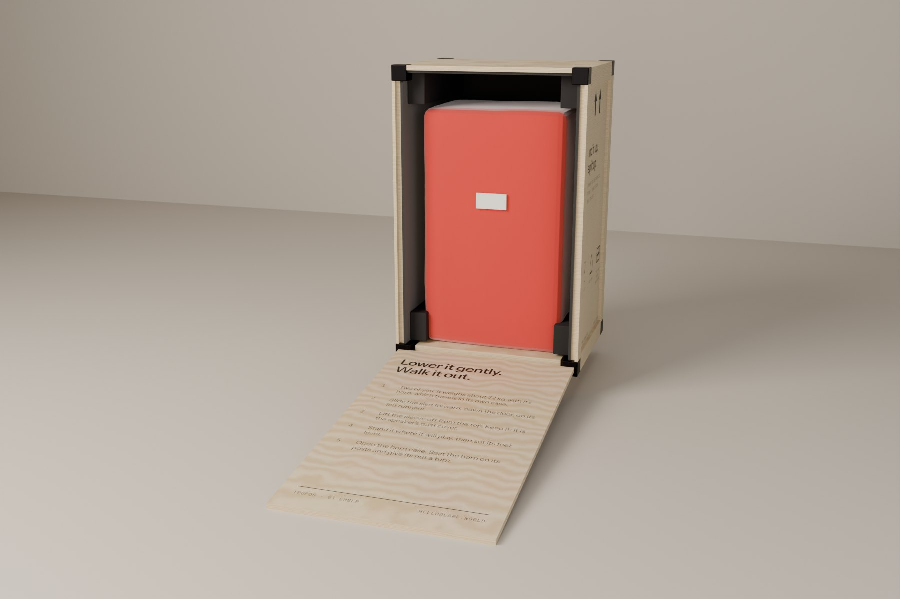<figcaption><b>The door is the ramp.</b> Hinged at its foot, it lowers to the floor; the speaker slides out on its sled in its sleeve, and the first thing read is printed on the inside. <span class="render">Render</span></figcaption></figure>
      <figure>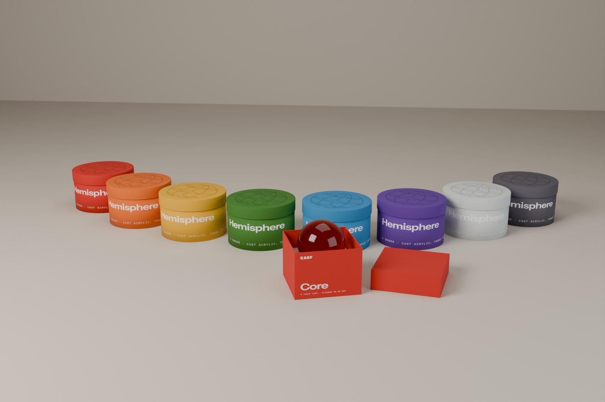<figcaption><b>The drums and Core's box.</b> Each Hemisphere shade in a drum of its own colour, the globe blind-debossed on the lid; Core's ball seated in moulded pulp. <span class="render">Render</span></figcaption></figure>
    </div>
    <ol class="steps">
      <li><b>Unlatch</b>Four black over-centre latches on the door. No screws, no tools, no crowbar.</li>
      <li><b>Lower</b>The door is hinged at its foot and comes down to the floor as a gentle ramp.</li>
      <li><b>Walk it out</b>The speaker rides out on its birch sled, on felt runners, down the door.</li>
      <li><b>Unsleeve</b>A cotton sleeve in the speaker's tint lifts off from the top. It stays as the dust cover.</li>
      <li><b>Crown it</b>The horn comes out of its own case, lid up, and seats on its posts with one nut.</li>
    </ol>
    <div class="decals">
      <figure>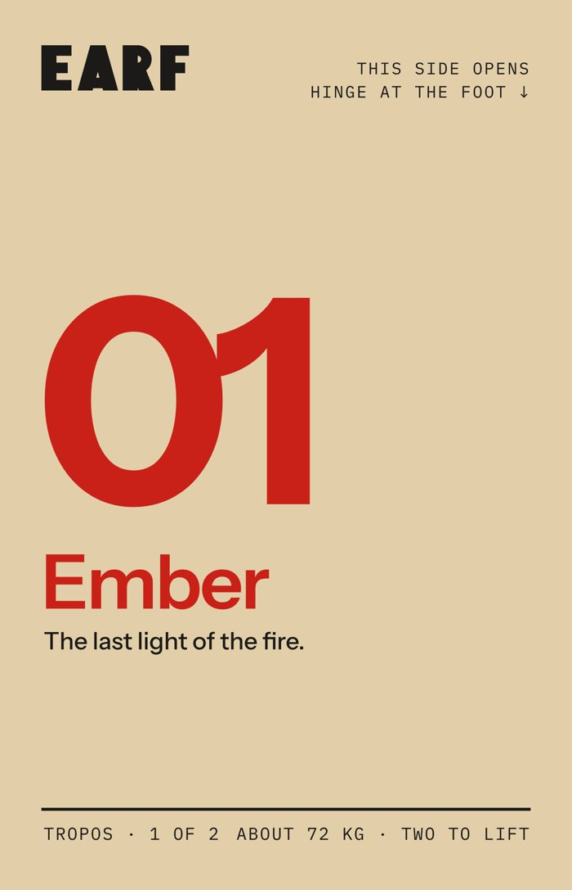<figcaption>The front. Two inks.</figcaption></figure>
      <figure>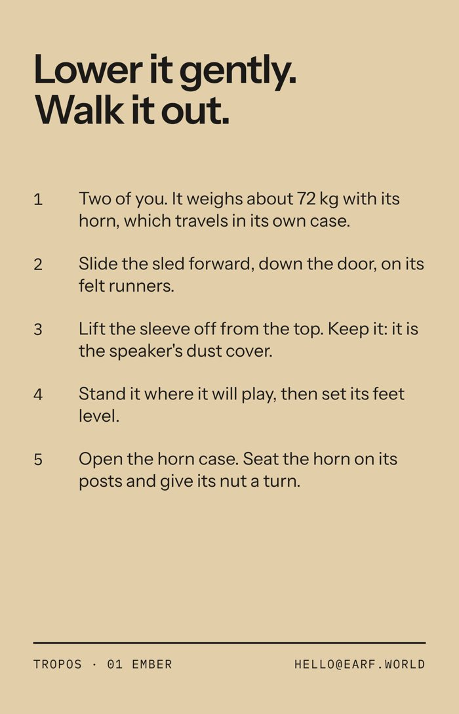<figcaption>Inside the door.</figcaption></figure>
      <figure>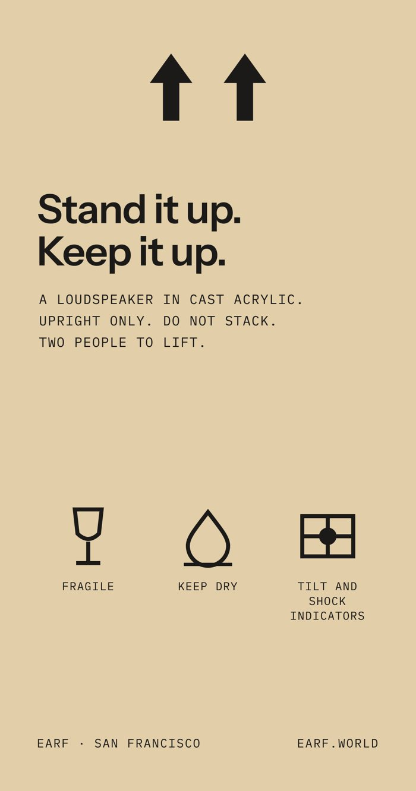<figcaption>The side: handling marks.</figcaption></figure>
    </div>
    <div class="scroll"><table>
      <thead><tr><th>Piece</th><th>Outside</th><th>Built from</th><th>Protects with</th><th>Tested to <span class="prop">target</span></th></tr></thead>
      <tbody>
        <tr><td><b>Tropos crate</b>, one a speaker</td><td>720 × 600 × 1160 mm on two 100 mm skids <span class="prop">proposal</span></td><td>18 mm birch ply, cleated; black steel corners and latches; the door hinged at its foot</td><td>Charcoal felt lining; cross-linked polyethylene corner blocks; the sled; the cotton sleeve against scuffs; tilt and shock indicators on two faces</td><td>ISTA 3B (freight, less than a truckload), plus a drop and tilt check on the crate</td></tr>
        <tr><td><b>Horn case</b>, one a pair</td><td>1420 × 560 × 460 mm <span class="prop">proposal</span></td><td>18 mm birch ply, a lifting lid, two steel handles</td><td>Both horns face up in a cut foam bed, the throats unloaded; the pods' caps packed apart</td><td>ISTA 3B, with the crates</td></tr>
        <tr><td><b>Hemisphere drum</b>, one a shade</td><td>260 mm across, 170 mm tall <span class="prop">proposal</span></td><td>Through-dyed board in the shade's tint, the globe blind-debossed on the lid; the fitting in a tray below</td><td>A moulded pulp ring holds the shade by its collar, clear of every wall</td><td>ISTA 3A (parcel)</td></tr>
        <tr><td><b>Core box</b></td><td>220 mm cube <span class="prop">proposal</span></td><td>Through-dyed board in the ball's tint; a lift-off lid</td><td>Moulded pulp: the ball on top, the base, cable and adapter beneath</td><td>ISTA 3A (parcel)</td></tr>
        <tr><td><b>Mantle crate</b></td><td>To be drawn from Mantle's 470 × 380 × 194 mm</td><td>Birch ply, the lid printed with the tint</td><td>Platter and lid packed apart; the plinth on its own foam</td><td>ISTA 3A or 3B by weight</td></tr>
      </tbody>
    </table></div>
    <div class="prose"><p class="muted" style="font-size:15px">Why this raises the odds: one freight claim on a pair can erase the margin on several; a crate two people can open without tools is also a crate a dealer or a hotel can receive without a specialist. And the unboxing is the first piece of content most owners post. The full concept, materials and test plan are in spinoffs/barkhorn/brandbook/PACKAGING.md.</p></div>
  </div>
</section>

<section class="chap band" id="ideas">
  <div class="in">
    <div class="head"><p class="no">10 · Big ideas</p><h2>Seven ways to raise the odds.</h2>
      <p class="lede">Each drawn or rendered so it can be judged by eye, each with a cost, a time and the reason it helps funding or sales. Every cost is an estimate, not a quote; names, dates and prices in the mockups are placeholders. The plans in full: spinoffs/barkhorn/brandbook/IDEAS.md.</p></div>
    <div class="app"><figure>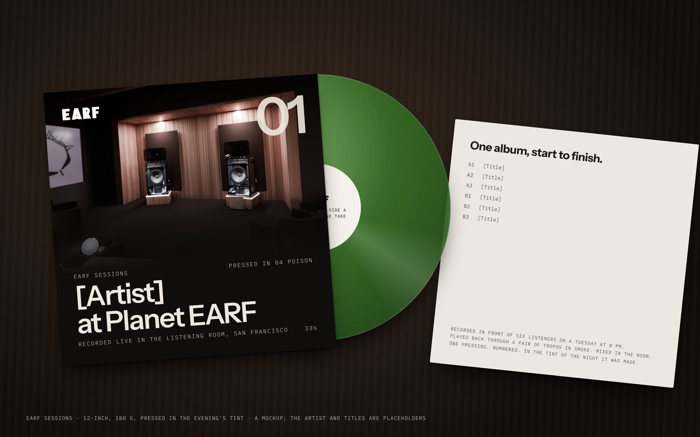</figure>
      <div class="txt"><p class="eyebrow">Idea a</p><h3>EARF Sessions</h3><p>A live record of a Session in the listening room, pressed in the night's tint, numbered, sold at the bar and on the site.</p>
        <dl><dt>Cost</dt><dd>About $5k to $9k a release, 300 LPs <span class="prop">est.</span></dd><dt>When</dt><dd>Session 00 the week the first pair plays</dd><dt>Why</dt><dd>Proof the speakers are serious, in a form that can't be faked; a product with a margin; a reason for the press to come back.</dd></dl></div></div>
    <div class="app"><figure>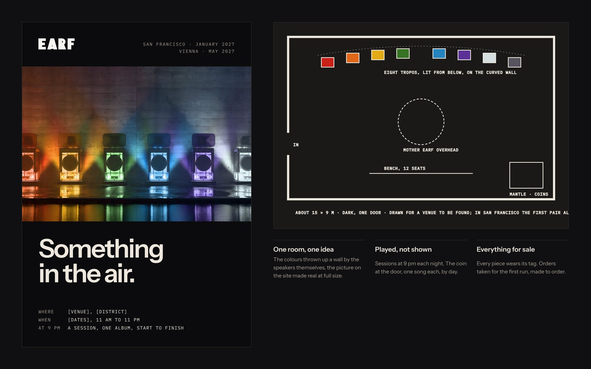</figure>
      <div class="txt"><p class="eyebrow">Idea b</p><h3>A debut room: San Francisco, then Milan</h3><p>One dark room: the speakers lit from below, a Session each night, every piece tagged for sale. First in San Francisco in FOG week, January 2027, with the first pair, as the investor deck's debut night; then the full eight at Milan or Design Miami once a batch exists.</p>
        <dl><dt>Cost</dt><dd>$4k to $15k in SF; $80k to $200k for Milan <span class="prop">est.</span></dd><dt>When</dt><dd>SF: 21–24 January 2027; Milan: April at the earliest</dd><dt>Why</dt><dd>Collectors, designers and press in one week, for a few nights' rent; the waiting list turned into deposits.</dd></dl></div></div>
    <div class="app"><figure>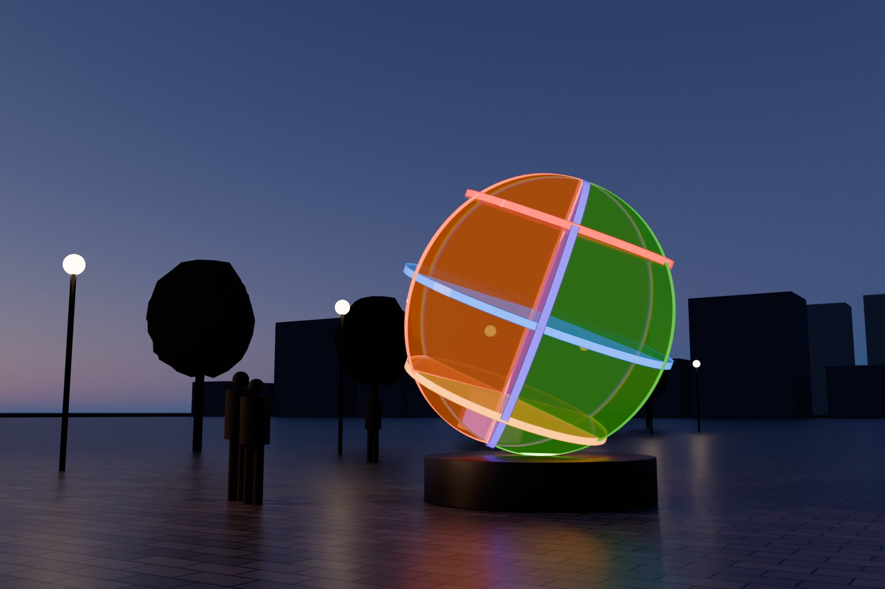</figure>
      <div class="txt"><p class="eyebrow">Idea c</p><h3>Mother EARF, at city scale</h3><p>The bar's globe, 4 m across, edge-lit in its tints on a low plinth in a plaza or on a waterfront.</p>
        <dl><dt>Cost</dt><dd>About $150k to $300k at 4 m; far less at 2 m <span class="prop">est.</span></dd><dt>When</dt><dd>6 to 9 months temporary; 12 to 18 permanent</dd><dt>Why</dt><dd>The mark at the size of a building, and the idea someone else can pay for: a developer, a sponsor, a festival.</dd></dl></div></div>
    <div class="app"><figure>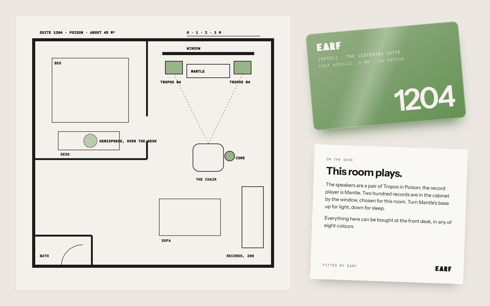</figure>
      <div class="txt"><p class="eyebrow">Idea d</p><h3>Hotel listening suites</h3><p>A suite fitted as a complete EARF room in one tint, with records chosen for it; everything for sale at the front desk.</p>
        <dl><dt>Cost</dt><dd>Trade-priced kits; one pilot suite <span class="prop">est.</span></dd><dt>When</dt><dd>A season after a signed hotel</dd><dt>Why</dt><dd>A night with the speaker sells it better than a picture; trade revenue that doesn't wait for the bar.</dd></dl></div></div>
    <div class="app"><figure>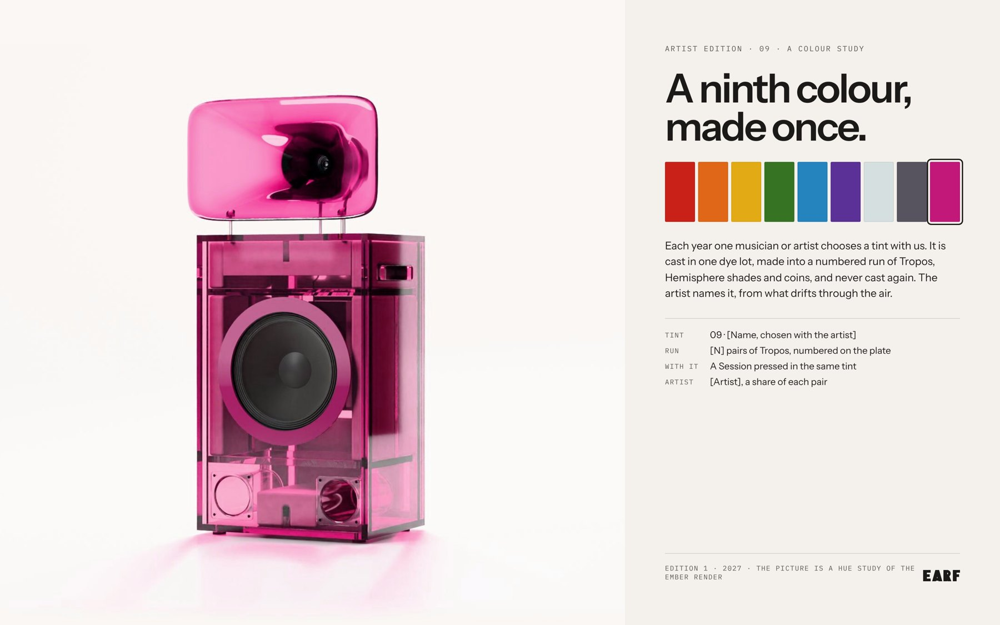</figure>
      <div class="txt"><p class="eyebrow">Idea e</p><h3>Artist editions</h3><p>A ninth tint each year, chosen and named with a musician or an artist, cast once, numbered, never again.</p>
        <dl><dt>Cost</dt><dd>A colour batch's minimum, and the artist's share <span class="prop">est.</span></dd><dt>When</dt><dd>2027, after the eight are in production</dd><dt>Why</dt><dd>A waitlist, a premium and the artist's audience. The picture is a hue study, not a cast.</dd></dl></div></div>
    <div class="app"><figure>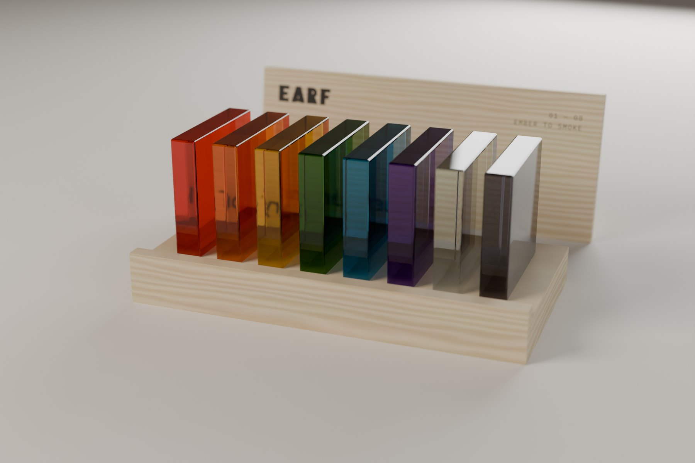</figure>
      <div class="txt"><p class="eyebrow">Idea f</p><h3>The Tint Library</h3><p>The eight tints as 100 × 100 × 20 mm cast tiles in a birch tray, sent to architects and designers who ask.</p>
        <dl><dt>Cost</dt><dd>About $100 to $250 a kit <span class="prop">est.</span></dd><dt>When</dt><dd>As soon as the sheet is chosen</dd><dt>Why</dt><dd>Designers specify what they can hold; and making it fixes the cast colours manufacturing needs.</dd></dl></div></div>
    <div class="app"><figure>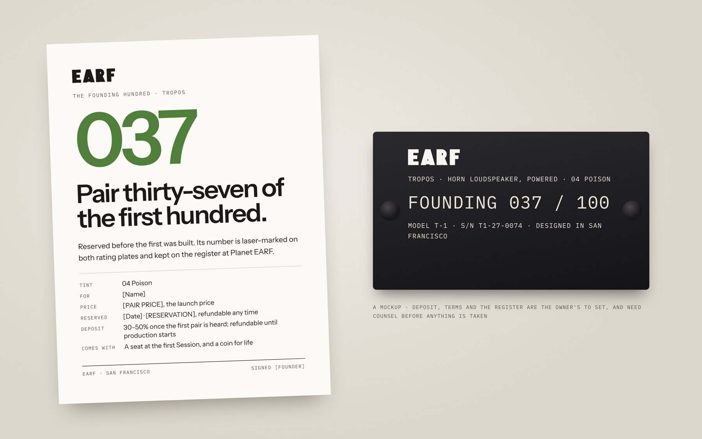</figure>
      <div class="txt"><p class="eyebrow">Idea g</p><h3>The Founding Hundred</h3><p>The first hundred pairs, reserved with a deposit, numbered on both plates, on a register at the bar.</p>
        <dl><dt>Cost</dt><dd>Counsel and printing <span class="prop">est.</span></dd><dt>When</dt><dd>Before the first run, once price and lead time are set</dd><dt>Why</dt><dd>The clearest evidence of demand an investor can be shown, and the first run's materials paid for.</dd></dl></div></div>
  </div>
</section>

<section class="chap band paper" id="press">
  <div class="in">
    <div class="head"><p class="no">11 · Press kit</p><h2>The facts, and only the facts.</h2>
      <p class="lede">Taken from earf.world's particulars and the project logs, with no invented figure, no quote and no price. Not for release until the owner says so. The sheets, the boilerplate and the image list with paths are in spinoffs/barkhorn/press.</p></div>
    <div class="boiler"><p class="eyebrow">Boilerplate</p><p>EARF is a San Francisco maker of hi-fi and lighting in cast acrylic, tinted all the way through, in eight colours from Ember to Smoke. Its products are named for the layers of the Earth: Tropos, a powered horn loudspeaker; Hemisphere, a pendant; Core, a table lamp; and Mantle, a record player. earf.world</p></div>
    <div class="sheets">
      <article class="sheet">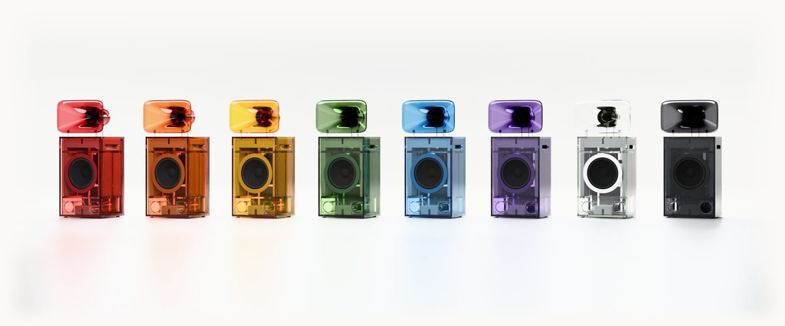<div class="sb"><p class="eyebrow">The company</p><h3>EARF</h3><p>Hi-fi and light, cast in tinted acrylic, in eight colours from Ember to Smoke.</p><dl><dt>Where</dt><dd>San Francisco</dd><dt>Site</dt><dd>earf.world</dd><dt>Write</dt><dd>hello@earf.world</dd><dt>Products</dt><dd>Tropos, Hemisphere, Core, Mantle</dd><dt>Colours</dt><dd>Eight, the same in every product</dd><dt>Status</dt><dd>In development, not yet for sale; every picture a render</dd><dt>Sells</dt><dd>Made to order; prices set at launch</dd></dl></div></article>
      <article class="sheet"><div class="sb"><p class="eyebrow">Powered horn loudspeaker</p><h3>Tropos</h3><p>Each cabinet cast acrylic, 20 mm thick, tinted through; the horn formed from the same acrylic.</p><dl><dt>Size</dt><dd>1293 mm tall; 625 wide at the horn, 560 at the cabinet; 423 deep</dd><dt>Weight</dt><dd>About 72 kg; 62 kg with the horn off</dd><dt>Drivers</dt><dd>FaitalPRO 15PR400 15-inch woofer; B&amp;C DE1085TN 2-inch compression driver</dd><dt>Amplifier</dt><dd>Hypex FA122 built in, 2 × 125 W, crossed at 1 kHz</dd><dt>Bass</dt><dd>To about 51 Hz at −3 dB; ports at 38 Hz</dd><dt>Loudness</dt><dd>Up to about 115 dB at 1 m, each</dd><dt>Inputs</dt><dd>XLR, RCA, AES, S/PDIF coaxial and optical; USB</dd></dl></div></article>
      <article class="sheet">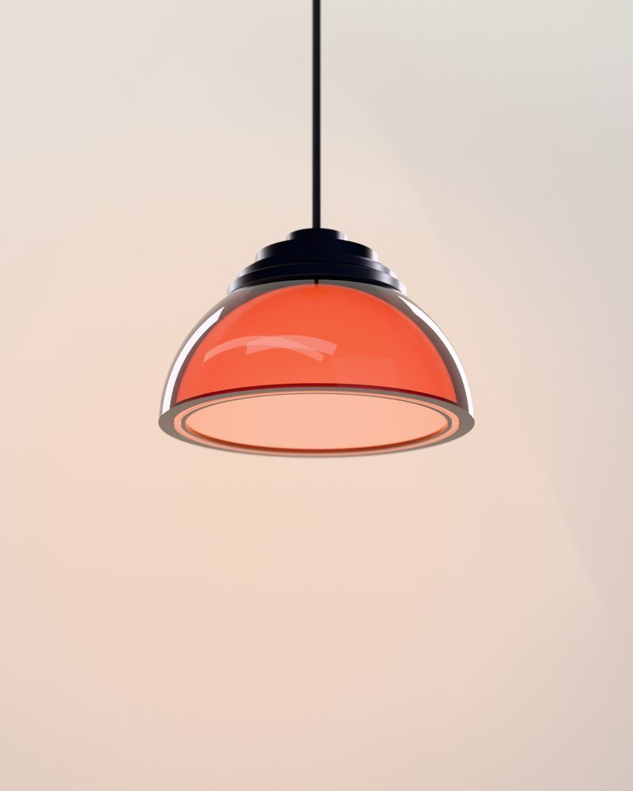<div class="sb"><p class="eyebrow">Pendant lamp</p><h3>Hemisphere</h3><p>Hung low over the bar. A quarter turn takes its shade off, and another puts a new colour on.</p><dl><dt>Size</dt><dd>200 mm across</dd><dt>Shade</dt><dd>Three layers of cast acrylic, tinted, frosted between</dd><dt>Light</dt><dd>2700 K, CRI 90, the source shielded in the hub</dd><dt>Fitting</dt><dd>Black anodised aluminium, quarter-turn catch</dd><dt>Mains</dt><dd>120 V, dimmable; UL 1598 listing to follow</dd><dt>Shades</dt><dd>All eight, sold singly</dd></dl></div></article>
      <article class="sheet"><div class="sb"><p class="eyebrow">Table lamp</p><h3>Core</h3><p>A ball of tinted acrylic sitting low in a black acrylic base, plugged in or not.</p><dl><dt>Size</dt><dd>160 mm ball, 180 mm tall</dd><dt>Weight</dt><dd>About 1.5 kg</dd><dt>Light</dt><dd>2200 to 2700 K, warmer as it dims</dd><dt>Control</dt><dd>Touch the ring: tap to switch, hold to dim</dd><dt>Power</dt><dd>USB-C; about five hours cordless at full, on replaceable cells</dd><dt>Rating</dt><dd>Designed to meet IP44</dd></dl></div></article>
      <article class="sheet"><div class="sb"><p class="eyebrow">Record player</p><h3>Mantle</h3><p>A record player that floats on its own light: a tinted plinth 40 mm over an edge-lit base.</p><dl><dt>Plinth</dt><dd>25 mm cast acrylic, tinted through</dd><dt>Drive</dt><dd>Belt, the motor in a pod of its own</dd><dt>Arm · cartridge</dt><dd>Rega RB330 · Ortofon 2M Black</dd><dt>Phono</dt><dd>Built in, MM, with a bypass</dd><dt>Size</dt><dd>470 × 380 × 194 mm, lid down</dd><dt>Weight</dt><dd>About 15.5 kg</dd></dl></div></article>
    </div>
    <p class="muted" style="font-size:15px;max-width:76ch">Every release carries the standing lines: in development and not yet for sale; every picture a render until the first are built; design figures until measured; prices set at launch. Planet EARF has an internal sheet only, since the bar isn't on the site.</p>
  </div>
</section>

<section class="chap band" id="launch">
  <div class="in">
    <div class="head"><p class="no">12 · Launch</p><h2>In order, each step paying for the next.</h2>
      <p class="lede">The brand's moves set against the investor deck's plan: a $50,000 raise for the first pieces and a debut, a pre-seed on deposits, the bar financed apart. Dates are proposals.</p></div>
    <ol class="timeline"><li><span class="when">Now to December 2026</span><h3>Name and mark, protected</h3><p>The trademark search and filings the deck budgets (EARF, Tropos, Mantle, Hemisphere). The brand book frozen as version one; the press kit held until the debut.</p></li><li><span class="when">As the sheet is chosen</span><h3>The Tint Library</h3><p>The eight cast colours fixed with the suppliers, and the first kits cut from them: the first time anyone outside sees the real tints.</p></li><li><span class="when">When the first pair plays</span><h3>Session 00</h3><p>One album recorded through the first pair, in any good room. The first sound anyone can hear, and the first picture that isn't a render.</p></li><li><span class="when">21–24 January 2027</span><h3>The debut room, San Francisco</h3><p>FOG week. The first pair lit from below, one of each lamp and Mantle, the coin at the door, the tags on everything. The press kit goes out the week before.</p></li><li><span class="when">From the debut</span><h3>The Founding Hundred</h3><p>Deposits on numbered pairs, on terms counsel has set: the evidence for the pre-seed, and the first run's materials.</p></li><li><span class="when">Spring 2027</span><h3>Certification and a first batch</h3><p>The deck's step 2. Packaging tested to ISTA with a dummy load before the first crate leaves.</p></li><li><span class="when">April or December 2027</span><h3>Milan or Design Miami</h3><p>The full eight in one room, once a batch exists. Mother EARF at 2 m travels with it.</p></li><li><span class="when">Financed on its own</span><h3>Planet EARF</h3><p>The deck's step 3: the bar, the Sessions as a label, the sign on the side door.</p></li></ol>
  </div>
</section>

<footer class="band">
  <div class="in">
    <p class="eyebrow">EARF Brand Book · first edition</p>
    <p class="muted">Made from the site (earf.world, built by web.py), the project log (spinoffs/barkhorn/README.md and companions/), the marks (brand/, marks/) and the bar's house book. Every picture is a render; the mockups are drawn for review, and their sizes, stocks and the names held in reserve are proposals until the owner signs them. The sources and the mockups' files are in spinoffs/barkhorn/brandbook on the r47-brand branch.</p>
  </div>
</footer>
